W09 Hidden dartR Powers
W09 dartR developer


Choosing colours for discrete groups
Introduction
When plotting discrete categories such as populations or locations, it is helpful to use palettes with clearly distinguishable colours.
# Explore palettes available through dartRverse
gl.select.colors()Starting gl.select.colors
Warning: Number of required colors not specified, set to 9
Warning: No color library specified, set to scales and palette set to hue_pal
Need to select one of baseR, brewer, scales, gr.palette or gr.hcl
Showing and returning 9 colors for library scales : palette hue_pal 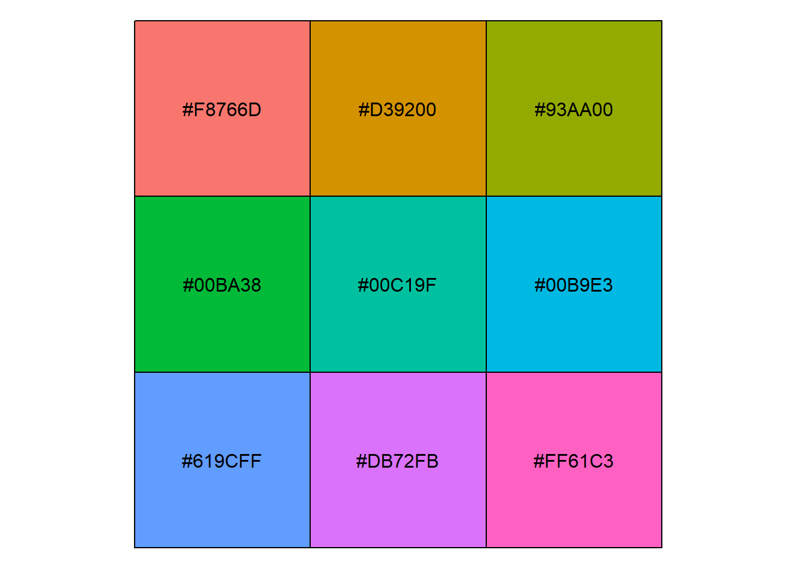
Completed: gl.select.colors [1] "#F8766D" "#D39200" "#93AA00" "#00BA38" "#00C19F" "#00B9E3" "#619CFF"
[8] "#DB72FB" "#FF61C3"# Explore palettes from RColorBrewer
RColorBrewer::display.brewer.all()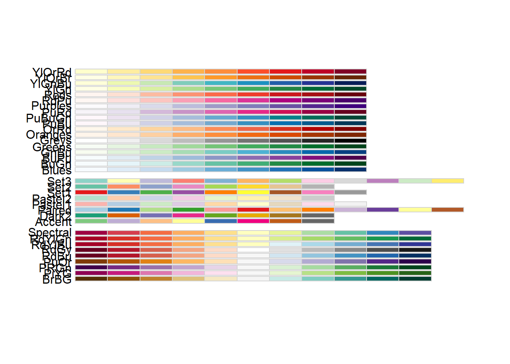
RColorBrewer::brewer.pal.info maxcolors category colorblind
BrBG 11 div TRUE
PiYG 11 div TRUE
PRGn 11 div TRUE
PuOr 11 div TRUE
RdBu 11 div TRUE
RdGy 11 div FALSE
RdYlBu 11 div TRUE
RdYlGn 11 div FALSE
Spectral 11 div FALSE
Accent 8 qual FALSE
Dark2 8 qual TRUE
Paired 12 qual TRUE
Pastel1 9 qual FALSE
Pastel2 8 qual FALSE
Set1 9 qual FALSE
Set2 8 qual TRUE
Set3 12 qual FALSE
Blues 9 seq TRUE
BuGn 9 seq TRUE
BuPu 9 seq TRUE
GnBu 9 seq TRUE
Greens 9 seq TRUE
Greys 9 seq TRUE
Oranges 9 seq TRUE
OrRd 9 seq TRUE
PuBu 9 seq TRUE
PuBuGn 9 seq TRUE
PuRd 9 seq TRUE
Purples 9 seq TRUE
RdPu 9 seq TRUE
Reds 9 seq TRUE
YlGn 9 seq TRUE
YlGnBu 9 seq TRUE
YlOrBr 9 seq TRUE
YlOrRd 9 seq TRUE# Explore built-in palettes from grDevices
grDevices::palette.pals() [1] "R3" "R4" "ggplot2" "Okabe-Ito"
[5] "Accent" "Dark 2" "Paired" "Pastel 1"
[9] "Pastel 2" "Set 1" "Set 2" "Set 3"
[13] "Tableau 10" "Classic Tableau" "Polychrome 36" "Alphabet" grDevices::hcl.pals() [1] "Pastel 1" "Dark 2" "Dark 3" "Set 2"
[5] "Set 3" "Warm" "Cold" "Harmonic"
[9] "Dynamic" "Grays" "Light Grays" "Blues 2"
[13] "Blues 3" "Purples 2" "Purples 3" "Reds 2"
[17] "Reds 3" "Greens 2" "Greens 3" "Oslo"
[21] "Purple-Blue" "Red-Purple" "Red-Blue" "Purple-Orange"
[25] "Purple-Yellow" "Blue-Yellow" "Green-Yellow" "Red-Yellow"
[29] "Heat" "Heat 2" "Terrain" "Terrain 2"
[33] "Viridis" "Plasma" "Inferno" "Rocket"
[37] "Mako" "Dark Mint" "Mint" "BluGrn"
[41] "Teal" "TealGrn" "Emrld" "BluYl"
[45] "ag_GrnYl" "Peach" "PinkYl" "Burg"
[49] "BurgYl" "RedOr" "OrYel" "Purp"
[53] "PurpOr" "Sunset" "Magenta" "SunsetDark"
[57] "ag_Sunset" "BrwnYl" "YlOrRd" "YlOrBr"
[61] "OrRd" "Oranges" "YlGn" "YlGnBu"
[65] "Reds" "RdPu" "PuRd" "Purples"
[69] "PuBuGn" "PuBu" "Greens" "BuGn"
[73] "GnBu" "BuPu" "Blues" "Lajolla"
[77] "Turku" "Hawaii" "Batlow" "Blue-Red"
[81] "Blue-Red 2" "Blue-Red 3" "Red-Green" "Purple-Green"
[85] "Purple-Brown" "Green-Brown" "Blue-Yellow 2" "Blue-Yellow 3"
[89] "Green-Orange" "Cyan-Magenta" "Tropic" "Broc"
[93] "Cork" "Vik" "Berlin" "Lisbon"
[97] "Tofino" "ArmyRose" "Earth" "Fall"
[101] "Geyser" "TealRose" "Temps" "PuOr"
[105] "RdBu" "RdGy" "PiYG" "PRGn"
[109] "BrBG" "RdYlBu" "RdYlGn" "Spectral"
[113] "Zissou 1" "Cividis" "Roma" # Base R also provides palettes such as:
# rainbow(), heat.colors(), topo.colors(), terrain.colors(), and cm.colors()# Select a palette for populations or sampling locations
col2 <- gl.select.colors(
x = possums.gl,
library = "gr.hcl",
palette = "Dark 3"
)Starting gl.select.colors
Processing genlight object with SNP data
Warning: Number of required colors not specified, set to number of pops 10 in gl object
Library: grDevices
Palette: hcl.pals
Showing and returning 10 colors for library grDevice-hcl : palette Dark 3 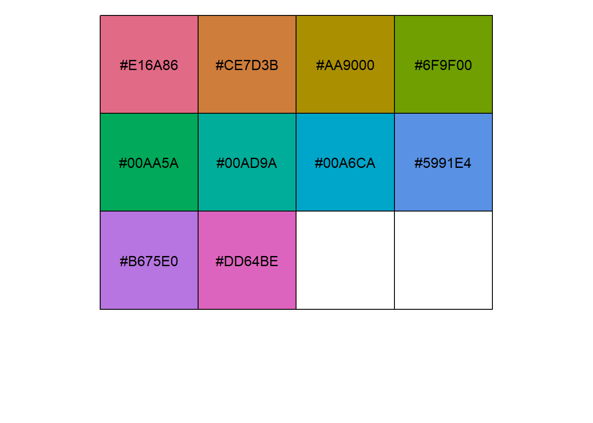
Completed: gl.select.colors Adobe Color Wheel
Adobe Color Wheel is useful for designing palettes for categorical data.
It helps create balanced colour combinations while keeping groups easy to distinguish.
Its accessibility tools are also useful for checking how palettes appear to people with colour-vision deficiencies.
https://color.adobe.com/create/color-wheel

Reusing the same colours across plots
To keep population colours consistent across multiple plots, use the same vector in plot.colors.pop.
gl.report.diversity(possums.gl, plot.colors.pop = col2)Starting gl.report.diversity
Processing genlight object with SNP data
Starting gl.filter.allna
Identifying and removing loci and individuals scored all
missing (NA)
Deleting loci that are scored as all missing (NA)
Deleting individuals that are scored as all missing (NA)
Completed: gl.filter.allna 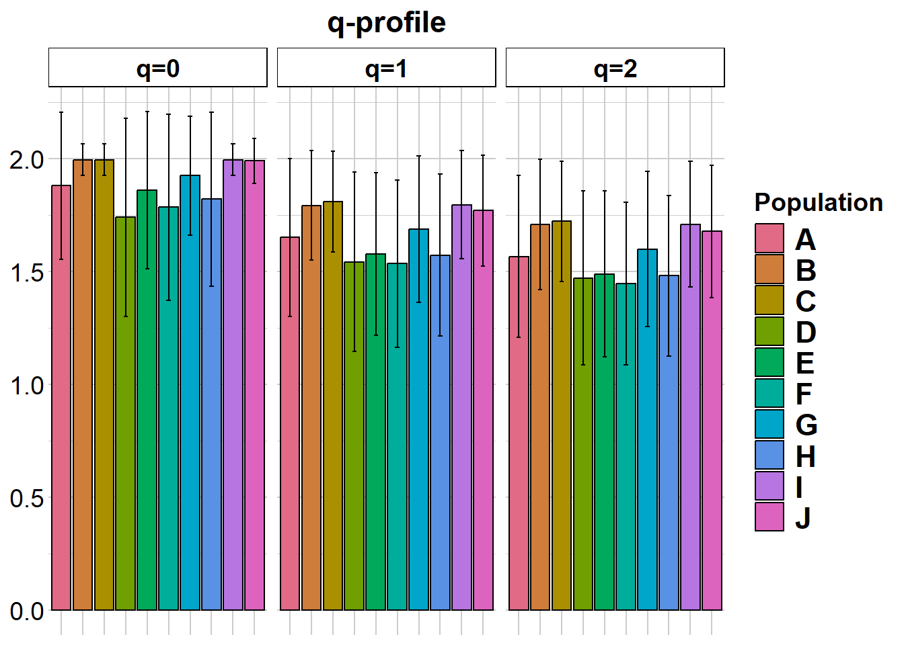
| | nloci| m_0Ha| sd_0Ha| m_1Ha| sd_1Ha| m_2Ha| sd_2Ha|
|:--|-----:|-----:|------:|-----:|------:|-----:|------:|
|A | 200| 0.880| 0.326| 0.475| 0.239| 0.322| 0.177|
|B | 200| 0.995| 0.071| 0.573| 0.152| 0.394| 0.125|
|C | 200| 0.995| 0.071| 0.583| 0.140| 0.402| 0.115|
|D | 200| 0.740| 0.440| 0.397| 0.278| 0.269| 0.199|
|E | 200| 0.860| 0.348| 0.427| 0.246| 0.284| 0.183|
|F | 200| 0.785| 0.412| 0.396| 0.261| 0.263| 0.187|
|G | 200| 0.925| 0.264| 0.501| 0.218| 0.340| 0.165|
|H | 200| 0.820| 0.385| 0.423| 0.249| 0.282| 0.181|
|I | 200| 0.995| 0.071| 0.575| 0.152| 0.395| 0.123|
|J | 200| 0.990| 0.100| 0.560| 0.155| 0.382| 0.127|
pairwise non-missing loci
| | A| B| C| D| E| F| G| H| I| J|
|:--|---:|---:|---:|---:|---:|---:|---:|---:|---:|--:|
|A | NA| NA| NA| NA| NA| NA| NA| NA| NA| NA|
|B | 200| NA| NA| NA| NA| NA| NA| NA| NA| NA|
|C | 200| 200| NA| NA| NA| NA| NA| NA| NA| NA|
|D | 200| 200| 200| NA| NA| NA| NA| NA| NA| NA|
|E | 200| 200| 200| 200| NA| NA| NA| NA| NA| NA|
|F | 200| 200| 200| 200| 200| NA| NA| NA| NA| NA|
|G | 200| 200| 200| 200| 200| 200| NA| NA| NA| NA|
|H | 200| 200| 200| 200| 200| 200| 200| NA| NA| NA|
|I | 200| 200| 200| 200| 200| 200| 200| 200| NA| NA|
|J | 200| 200| 200| 200| 200| 200| 200| 200| 200| NA|
0_H_beta
| | A| B| C| D| E| F| G| H| I| J|
|:--|-----:|-----:|-----:|-----:|-----:|-----:|-----:|-----:|-----:|-----:|
|A | NA| 0.166| 0.166| 0.249| 0.211| 0.236| 0.195| 0.214| 0.166| 0.169|
|B | 0.062| NA| 0.000| 0.227| 0.176| 0.208| 0.136| 0.195| 0.000| 0.061|
|C | 0.062| 0.000| NA| 0.227| 0.176| 0.208| 0.136| 0.195| 0.000| 0.061|
|D | 0.175| 0.132| 0.132| NA| 0.258| 0.273| 0.250| 0.263| 0.227| 0.223|
|E | 0.115| 0.072| 0.072| 0.170| NA| 0.280| 0.206| 0.238| 0.176| 0.179|
|F | 0.152| 0.110| 0.110| 0.222| 0.168| NA| 0.231| 0.258| 0.208| 0.209|
|G | 0.092| 0.040| 0.040| 0.162| 0.108| 0.140| NA| 0.215| 0.136| 0.140|
|H | 0.120| 0.092| 0.092| 0.190| 0.145| 0.188| 0.112| NA| 0.195| 0.193|
|I | 0.062| 0.000| 0.000| 0.132| 0.072| 0.110| 0.040| 0.092| NA| 0.061|
|J | 0.065| 0.007| 0.007| 0.135| 0.075| 0.112| 0.043| 0.090| 0.007| NA|
1_H_beta
| | A| B| C| D| E| F| G| H| I| J|
|:--|-----:|-----:|-----:|-----:|-----:|-----:|-----:|-----:|-----:|-----:|
|A | NA| 0.141| 0.143| 0.187| 0.170| 0.178| 0.158| 0.172| 0.127| 0.131|
|B | 0.139| NA| 0.113| 0.159| 0.143| 0.161| 0.128| 0.139| 0.103| 0.106|
|C | 0.134| 0.085| NA| 0.164| 0.145| 0.146| 0.119| 0.137| 0.098| 0.101|
|D | 0.227| 0.178| 0.173| NA| 0.191| 0.180| 0.172| 0.176| 0.158| 0.153|
|E | 0.213| 0.164| 0.158| 0.252| NA| 0.188| 0.160| 0.171| 0.138| 0.142|
|F | 0.228| 0.179| 0.174| 0.267| 0.252| NA| 0.166| 0.180| 0.145| 0.150|
|G | 0.175| 0.126| 0.121| 0.214| 0.200| 0.215| NA| 0.173| 0.134| 0.129|
|H | 0.214| 0.165| 0.160| 0.253| 0.239| 0.254| 0.201| NA| 0.146| 0.139|
|I | 0.139| 0.089| 0.084| 0.177| 0.163| 0.178| 0.126| 0.164| NA| 0.119|
|J | 0.146| 0.097| 0.092| 0.185| 0.170| 0.185| 0.133| 0.172| 0.096| NA|
2_H_beta
| | A| B| C| D| E| F| G| H| I| J|
|:--|-----:|-----:|-----:|-----:|-----:|-----:|-----:|-----:|-----:|-----:|
|A | NA| 0.155| 0.156| 0.173| 0.164| 0.163| 0.160| 0.158| 0.135| 0.140|
|B | 0.172| NA| 0.130| 0.156| 0.150| 0.160| 0.146| 0.144| 0.120| 0.123|
|C | 0.166| 0.118| NA| 0.166| 0.151| 0.148| 0.134| 0.141| 0.118| 0.122|
|D | 0.247| 0.208| 0.200| NA| 0.168| 0.161| 0.161| 0.154| 0.154| 0.146|
|E | 0.241| 0.200| 0.194| 0.270| NA| 0.159| 0.153| 0.152| 0.144| 0.145|
|F | 0.254| 0.210| 0.209| 0.286| 0.275| NA| 0.155| 0.156| 0.140| 0.147|
|G | 0.207| 0.162| 0.160| 0.240| 0.233| 0.246| NA| 0.167| 0.139| 0.140|
|H | 0.244| 0.203| 0.198| 0.276| 0.267| 0.277| 0.230| NA| 0.144| 0.141|
|I | 0.176| 0.125| 0.120| 0.207| 0.200| 0.214| 0.161| 0.200| NA| 0.131|
|J | 0.184| 0.134| 0.129| 0.218| 0.208| 0.221| 0.171| 0.211| 0.130| NA|
| | nloci| m_0Da| sd_0Da| m_1Da| sd_1Da| m_2Da| sd_2Da|
|:--|-----:|-----:|------:|-----:|------:|-----:|------:|
|A | 200| 1.880| 0.326| 1.651| 0.350| 1.567| 0.358|
|B | 200| 1.995| 0.071| 1.793| 0.242| 1.707| 0.289|
|C | 200| 1.995| 0.071| 1.808| 0.223| 1.722| 0.267|
|D | 200| 1.740| 0.440| 1.543| 0.397| 1.470| 0.385|
|E | 200| 1.860| 0.348| 1.577| 0.360| 1.488| 0.368|
|F | 200| 1.785| 0.412| 1.534| 0.372| 1.447| 0.360|
|G | 200| 1.925| 0.264| 1.686| 0.325| 1.599| 0.345|
|H | 200| 1.820| 0.385| 1.572| 0.358| 1.481| 0.356|
|I | 200| 1.995| 0.071| 1.795| 0.239| 1.709| 0.279|
|J | 200| 1.990| 0.100| 1.770| 0.246| 1.677| 0.292|
pairwise non-missing loci
| | A| B| C| D| E| F| G| H| I| J|
|:--|---:|---:|---:|---:|---:|---:|---:|---:|---:|--:|
|A | NA| NA| NA| NA| NA| NA| NA| NA| NA| NA|
|B | 200| NA| NA| NA| NA| NA| NA| NA| NA| NA|
|C | 200| 200| NA| NA| NA| NA| NA| NA| NA| NA|
|D | 200| 200| 200| NA| NA| NA| NA| NA| NA| NA|
|E | 200| 200| 200| 200| NA| NA| NA| NA| NA| NA|
|F | 200| 200| 200| 200| 200| NA| NA| NA| NA| NA|
|G | 200| 200| 200| 200| 200| 200| NA| NA| NA| NA|
|H | 200| 200| 200| 200| 200| 200| 200| NA| NA| NA|
|I | 200| 200| 200| 200| 200| 200| 200| 200| NA| NA|
|J | 200| 200| 200| 200| 200| 200| 200| 200| 200| NA|
0_D_beta
| | A| B| C| D| E| F| G| H| I| J|
|:--|-----:|-----:|-----:|-----:|-----:|-----:|-----:|-----:|-----:|-----:|
|A | NA| 0.166| 0.166| 0.249| 0.211| 0.236| 0.195| 0.214| 0.166| 0.169|
|B | 1.062| NA| 0.000| 0.227| 0.176| 0.208| 0.136| 0.195| 0.000| 0.061|
|C | 1.062| 1.000| NA| 0.227| 0.176| 0.208| 0.136| 0.195| 0.000| 0.061|
|D | 1.175| 1.133| 1.133| NA| 0.258| 0.273| 0.250| 0.263| 0.227| 0.223|
|E | 1.115| 1.072| 1.072| 1.170| NA| 0.280| 0.206| 0.238| 0.176| 0.179|
|F | 1.153| 1.110| 1.110| 1.222| 1.168| NA| 0.231| 0.258| 0.208| 0.209|
|G | 1.092| 1.040| 1.040| 1.163| 1.107| 1.140| NA| 0.215| 0.136| 0.140|
|H | 1.120| 1.092| 1.092| 1.190| 1.145| 1.188| 1.112| NA| 0.195| 0.193|
|I | 1.062| 1.000| 1.000| 1.133| 1.072| 1.110| 1.040| 1.092| NA| 0.061|
|J | 1.065| 1.008| 1.008| 1.135| 1.075| 1.112| 1.042| 1.090| 1.008| NA|
1_D_beta
| | A| B| C| D| E| F| G| H| I| J|
|:--|-----:|-----:|-----:|-----:|-----:|-----:|-----:|-----:|-----:|-----:|
|A | NA| 0.171| 0.175| 0.247| 0.222| 0.237| 0.201| 0.229| 0.153| 0.160|
|B | 1.161| NA| 0.137| 0.200| 0.176| 0.205| 0.153| 0.171| 0.122| 0.126|
|C | 1.156| 1.096| NA| 0.204| 0.180| 0.182| 0.142| 0.168| 0.115| 0.119|
|D | 1.278| 1.211| 1.205| NA| 0.259| 0.243| 0.226| 0.239| 0.200| 0.193|
|E | 1.255| 1.190| 1.184| 1.310| NA| 0.259| 0.209| 0.228| 0.168| 0.176|
|F | 1.277| 1.212| 1.203| 1.327| 1.310| NA| 0.218| 0.243| 0.182| 0.188|
|G | 1.207| 1.144| 1.137| 1.258| 1.237| 1.258| NA| 0.226| 0.167| 0.156|
|H | 1.258| 1.191| 1.185| 1.309| 1.288| 1.310| 1.242| NA| 0.183| 0.172|
|I | 1.158| 1.100| 1.093| 1.210| 1.188| 1.208| 1.145| 1.192| NA| 0.144|
|J | 1.167| 1.108| 1.102| 1.217| 1.197| 1.217| 1.152| 1.199| 1.109| NA|
2_D_beta
| | A| B| C| D| E| F| G| H| I| J|
|:--|-----:|-----:|-----:|-----:|-----:|-----:|-----:|-----:|-----:|-----:|
|A | NA| 0.186| 0.187| 0.219| 0.206| 0.206| 0.197| 0.199| 0.163| 0.169|
|B | 1.202| NA| 0.153| 0.191| 0.183| 0.197| 0.172| 0.174| 0.141| 0.146|
|C | 1.195| 1.135| NA| 0.201| 0.183| 0.180| 0.158| 0.171| 0.137| 0.142|
|D | 1.299| 1.246| 1.238| NA| 0.215| 0.202| 0.203| 0.198| 0.190| 0.181|
|E | 1.289| 1.235| 1.228| 1.328| NA| 0.206| 0.192| 0.196| 0.175| 0.178|
|F | 1.305| 1.249| 1.246| 1.347| 1.333| NA| 0.194| 0.202| 0.174| 0.182|
|G | 1.246| 1.189| 1.184| 1.288| 1.277| 1.293| NA| 0.206| 0.167| 0.168|
|H | 1.291| 1.237| 1.231| 1.333| 1.321| 1.335| 1.276| NA| 0.177| 0.172|
|I | 1.204| 1.141| 1.135| 1.244| 1.234| 1.251| 1.186| 1.234| NA| 0.157|
|J | 1.214| 1.153| 1.146| 1.257| 1.244| 1.260| 1.198| 1.246| 1.148| NA|
Completed: gl.report.diversity gl.report.heterozygosity(possums.gl, plot.colors.pop = col2)Starting gl.report.heterozygosity
Processing genlight object with SNP data
Calculating Observed Heterozygosities, averaged across
loci, for each population
Calculating Expected Heterozygosities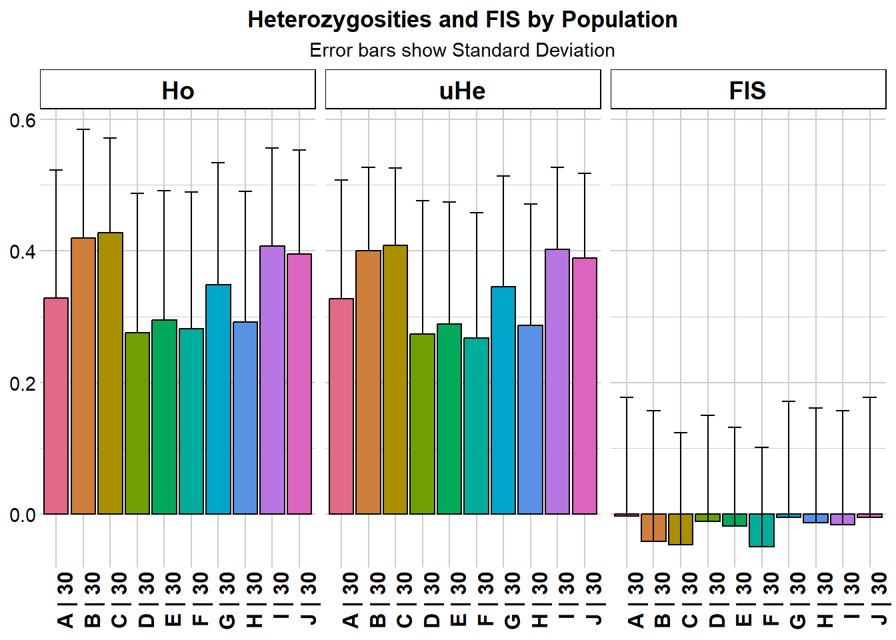
pop n.Ind n.Loc n.Loc.adj polyLoc monoLoc all_NALoc Ho HoSD
A A 30 200 1 176 24 0 0.328167 0.194282
B B 30 200 1 199 1 0 0.419833 0.164766
C C 30 200 1 199 1 0 0.428000 0.143282
D D 30 200 1 148 52 0 0.275333 0.212145
E E 30 200 1 172 28 0 0.294500 0.197069
F F 30 200 1 157 43 0 0.282000 0.207665
G G 30 200 1 185 15 0 0.348167 0.186169
H H 30 200 1 164 36 0 0.291667 0.198452
I I 30 200 1 199 1 0 0.407500 0.148337
J J 30 200 1 198 2 0 0.395167 0.158384
HoSE He HeSD HeSE uHe uHeSD uHeSE FIS
A 0.013738 0.322008 0.177349 0.012540 0.327466 0.180355 0.012753 -0.003441
B 0.011651 0.393597 0.124943 0.008835 0.400268 0.127060 0.008985 -0.041458
C 0.010132 0.401761 0.115278 0.008151 0.408571 0.117232 0.008290 -0.046254
D 0.015001 0.268506 0.199429 0.014102 0.273056 0.202809 0.014341 -0.011727
E 0.013935 0.283769 0.182940 0.012936 0.288579 0.186040 0.013155 -0.018594
F 0.014684 0.263406 0.187172 0.013235 0.267870 0.190344 0.013459 -0.049482
G 0.013164 0.339714 0.165430 0.011698 0.345472 0.168234 0.011896 -0.005540
H 0.014033 0.282061 0.180894 0.012791 0.286842 0.183960 0.013008 -0.013183
I 0.010489 0.395092 0.123434 0.008728 0.401788 0.125526 0.008876 -0.016529
J 0.011199 0.382075 0.127029 0.008982 0.388551 0.129182 0.009135 -0.005575
FISSD FISSE
A 0.181093 0.013650
B 0.198027 0.014038
C 0.169509 0.012016
D 0.161729 0.013294
E 0.150227 0.011455
F 0.151049 0.012055
G 0.177174 0.013026
H 0.174236 0.013606
I 0.173271 0.012283
J 0.183047 0.013009
Completed: gl.report.heterozygosity Saving and customising a PCoA plot
The arguments plot.dir and plot.file can be used to save a plot object for later editing.
t1 <- possums.gl
pca <- gl.pcoa(t1)Starting gl.pcoa
Processing genlight object with SNP data
Warning: Number of loci is less than the number of individuals to be represented
Performing a PCA, individuals as entities, loci as attributes, SNP genotype as stateFound more than one class "dist" in cache; using the first, from namespace 'BiocGenerics'Also defined by 'spam'Found more than one class "dist" in cache; using the first, from namespace 'BiocGenerics'Also defined by 'spam'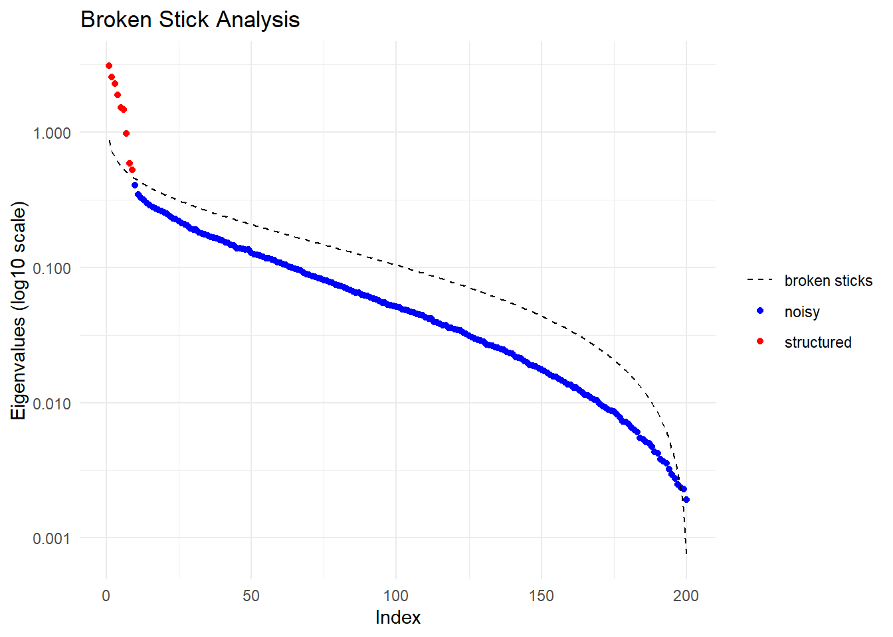
Starting gl.colors
Selected color type 2
Completed: gl.colors 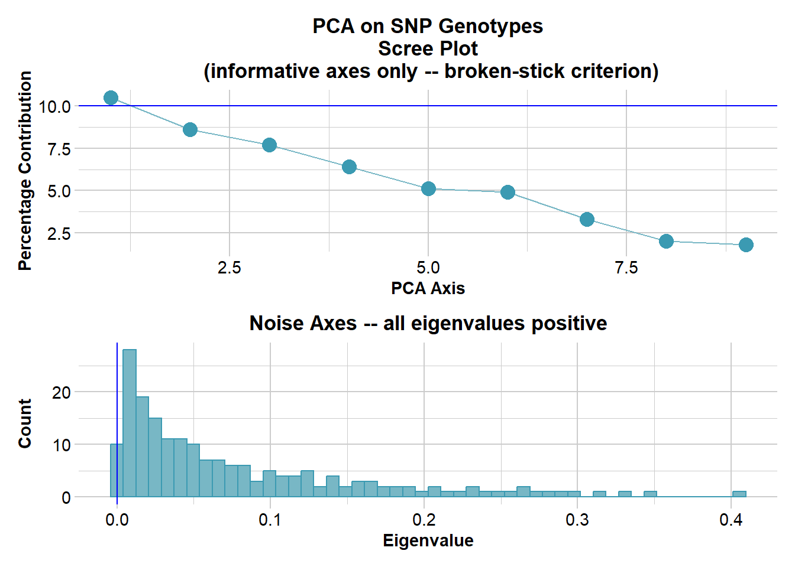
Completed: gl.pcoa gl.pcoa.plot(
pca,
t1,
plot.dir = getwd(),
plot.file = "test",
pt.colors = col2,
pt.size = 2
)Starting gl.pcoa.plot
Processing an ordination file (glPca)
Processing genlight object with SNP data
Plotting populations in a space defined by the SNPs
Preparing plot .... please wait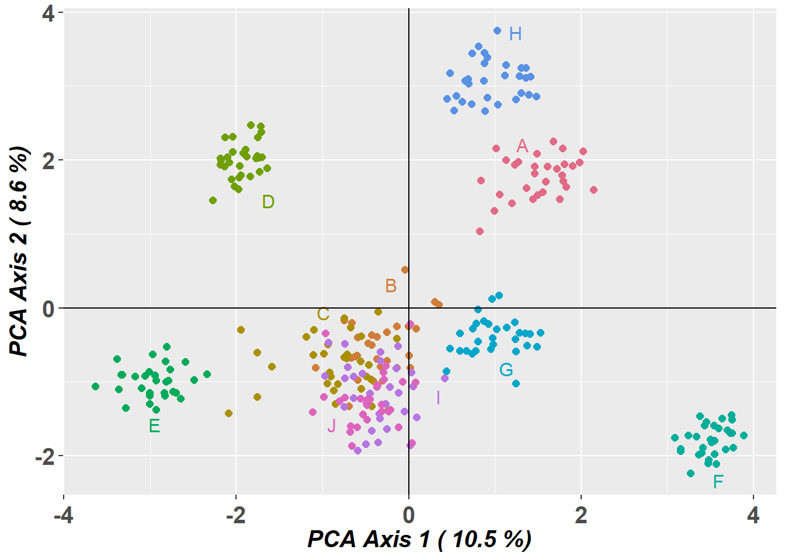
ggplot object saved as RDS binary to D:/Bernd/R/kioloa2/inst/tutorials/W09/test.RDS using saveRDS()
Completed: gl.pcoa.plot 
# Read the saved plot object and modify it with ggplot2 syntax
p1 <- readRDS("test.RDS")
p2 <- p1 +
theme_bw() +
theme(
axis.title.x = element_blank(),
axis.text.x = element_blank(),
axis.ticks.x = element_blank(),
axis.title.y = element_blank(),
axis.text.y = element_blank(),
axis.ticks.y = element_blank(),
legend.position = "none"
)
print(p2)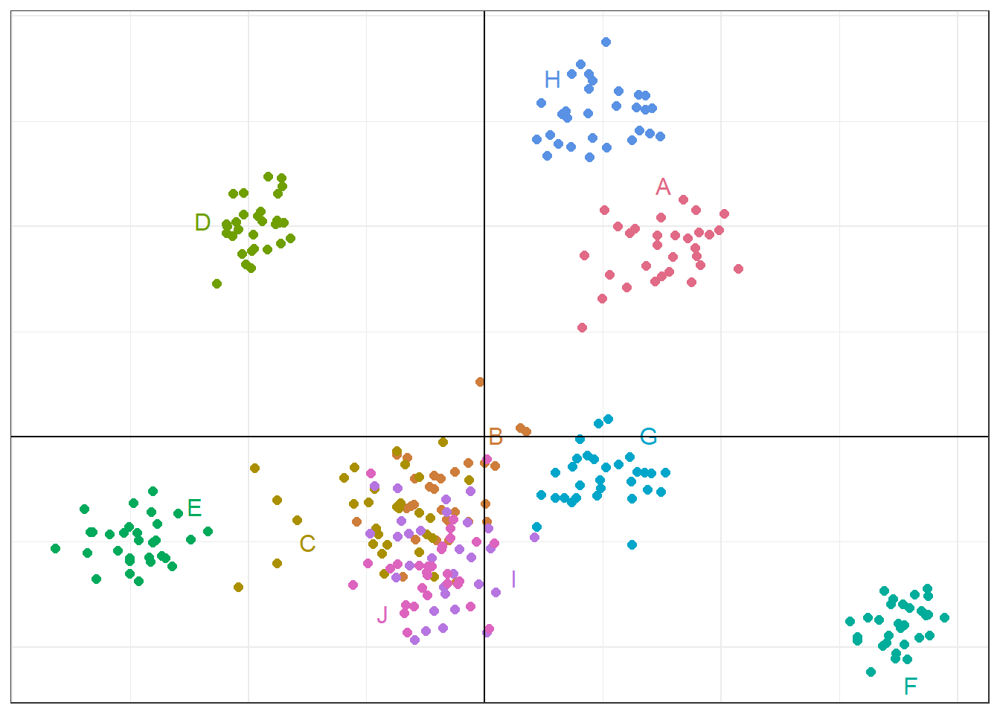
Alternative PCoA displays
# Interactive 2D plot
gl.pcoa.plot(
pca,
t1,
pt.colors = col2,
interactive = TRUE,
pt.size = 2
)# 3D plot using the third axis
gl.pcoa.plot(
pca,
t1,
pt.colors = col2,
zaxis = 3,
pt.size = 3
)Starting gl.pcoa.plot
Processing an ordination file (glPca)
Processing genlight object with SNP data
Displaying a three dimensional plot, mouse over for details for each point
May need to zoom out to place 3D plot within bounds
Completed: gl.pcoa.plot Clustering methods
# Run sparse non-negative matrix factorisation
r1 <- gl.run.snmf(platypus.gl, maxK = 3, rep = 4)Starting gl.run.snmf
Processing genlight object with SNP data
Warning: data include loci that are scored NA across all individuals.
Consider filtering using gl <- gl.filter.allna(gl)
Starting gl2geno
Processing genlight object with SNP data
Warning: data include loci that are scored NA across all individuals.
Consider filtering using gl <- gl.filter.allna(gl)
Loci with all missing data has been removed for conversion.
Output files: output.geno.lfmm.
Completed: gl2geno
The project is saved into :
mpY58HtY/dir8e587ab4196e/output.snmfProject
To load the project, use:
project = load.snmfProject("mpY58HtY/dir8e587ab4196e/output.snmfProject")
To remove the project, use:
remove.snmfProject("mpY58HtY/dir8e587ab4196e/output.snmfProject")
[1] 1448298994
[1] "*************************************"
[1] "* create.dataset *"
[1] "*************************************"
summary of the options:
-n (number of individuals) 81
-L (number of loci) 994
-s (seed random init) 1448298994
-r (percentage of masked data) 0.05
-x (genotype file in .geno format) C:\Users\s425824\AppData\Local\Temp\RtmpY58HtY\dir8e587ab4196e\output.geno
-o (output file in .geno format) C:/Users/s425824/AppData/Local/Temp/RtmpY58HtY/dir8e587ab4196e/output.snmf/masked/output_I.geno
Write genotype file with masked data, C:/Users/s425824/AppData/Local/Temp/RtmpY58HtY/dir8e587ab4196e/output.snmf/masked/output_I.geno: OK.
[1] "*************************************"
[1] "* sNMF K = 1 repetition 1 *"
[1] "*************************************"
summary of the options:
-n (number of individuals) 81
-L (number of loci) 994
-K (number of ancestral pops) 1
-x (input file) C:/Users/s425824/AppData/Local/Temp/RtmpY58HtY/dir8e587ab4196e/output.snmf/masked/output_I.geno
-q (individual admixture file) C:/Users/s425824/AppData/Local/Temp/RtmpY58HtY/dir8e587ab4196e/output.snmf/K1/run1/output_r1.1.Q
-g (ancestral frequencies file) C:/Users/s425824/AppData/Local/Temp/RtmpY58HtY/dir8e587ab4196e/output.snmf/K1/run1/output_r1.1.G
-i (number max of iterations) 200
-a (regularization parameter) 10
-s (seed random init) 1448298994
-e (tolerance error) 1E-05
-p (number of processes) 1
- diploid
Read genotype file C:/Users/s425824/AppData/Local/Temp/RtmpY58HtY/dir8e587ab4196e/output.snmf/masked/output_I.geno: OK.
Main algorithm:
Least-square error: 16759.433147
Write individual ancestry coefficient file C:/Users/s425824/AppData/Local/Temp/RtmpY58HtY/dir8e587ab4196e/output.snmf/K1/run1/output_r1.1.Q: OK.
Write ancestral allele frequency coefficient file C:/Users/s425824/AppData/Local/Temp/RtmpY58HtY/dir8e587ab4196e/output.snmf/K1/run1/output_r1.1.G: OK.
[1] "*************************************"
[1] "* cross-entropy estimation *"
[1] "*************************************"
summary of the options:
-n (number of individuals) 81
-L (number of loci) 994
-K (number of ancestral pops) 1
-x (genotype file) C:\Users\s425824\AppData\Local\Temp\RtmpY58HtY\dir8e587ab4196e\output.geno
-q (individual admixture) C:/Users/s425824/AppData/Local/Temp/RtmpY58HtY/dir8e587ab4196e/output.snmf/K1/run1/output_r1.1.Q
-g (ancestral frequencies) C:/Users/s425824/AppData/Local/Temp/RtmpY58HtY/dir8e587ab4196e/output.snmf/K1/run1/output_r1.1.G
-i (with masked genotypes) C:/Users/s425824/AppData/Local/Temp/RtmpY58HtY/dir8e587ab4196e/output.snmf/masked/output_I.geno
- diploid
Cross-Entropy (all data): 0.36599
Cross-Entropy (masked data): 0.411492
The project is saved into :
mpY58HtY/dir8e587ab4196e/output.snmfProject
To load the project, use:
project = load.snmfProject("mpY58HtY/dir8e587ab4196e/output.snmfProject")
To remove the project, use:
remove.snmfProject("mpY58HtY/dir8e587ab4196e/output.snmfProject")
[1] "*************************************"
[1] "* sNMF K = 2 repetition 1 *"
[1] "*************************************"
summary of the options:
-n (number of individuals) 81
-L (number of loci) 994
-K (number of ancestral pops) 2
-x (input file) C:/Users/s425824/AppData/Local/Temp/RtmpY58HtY/dir8e587ab4196e/output.snmf/masked/output_I.geno
-q (individual admixture file) C:/Users/s425824/AppData/Local/Temp/RtmpY58HtY/dir8e587ab4196e/output.snmf/K2/run1/output_r1.2.Q
-g (ancestral frequencies file) C:/Users/s425824/AppData/Local/Temp/RtmpY58HtY/dir8e587ab4196e/output.snmf/K2/run1/output_r1.2.G
-i (number max of iterations) 200
-a (regularization parameter) 10
-s (seed random init) 1448298994
-e (tolerance error) 1E-05
-p (number of processes) 1
- diploid
Read genotype file C:/Users/s425824/AppData/Local/Temp/RtmpY58HtY/dir8e587ab4196e/output.snmf/masked/output_I.geno: OK.
Main algorithm:
[ ]
[============]
Number of iterations: 33
Least-square error: 15971.849535
Write individual ancestry coefficient file C:/Users/s425824/AppData/Local/Temp/RtmpY58HtY/dir8e587ab4196e/output.snmf/K2/run1/output_r1.2.Q: OK.
Write ancestral allele frequency coefficient file C:/Users/s425824/AppData/Local/Temp/RtmpY58HtY/dir8e587ab4196e/output.snmf/K2/run1/output_r1.2.G: OK.
[1] "*************************************"
[1] "* cross-entropy estimation *"
[1] "*************************************"
summary of the options:
-n (number of individuals) 81
-L (number of loci) 994
-K (number of ancestral pops) 2
-x (genotype file) C:\Users\s425824\AppData\Local\Temp\RtmpY58HtY\dir8e587ab4196e\output.geno
-q (individual admixture) C:/Users/s425824/AppData/Local/Temp/RtmpY58HtY/dir8e587ab4196e/output.snmf/K2/run1/output_r1.2.Q
-g (ancestral frequencies) C:/Users/s425824/AppData/Local/Temp/RtmpY58HtY/dir8e587ab4196e/output.snmf/K2/run1/output_r1.2.G
-i (with masked genotypes) C:/Users/s425824/AppData/Local/Temp/RtmpY58HtY/dir8e587ab4196e/output.snmf/masked/output_I.geno
- diploid
Cross-Entropy (all data): 0.344392
Cross-Entropy (masked data): 0.401104
The project is saved into :
mpY58HtY/dir8e587ab4196e/output.snmfProject
To load the project, use:
project = load.snmfProject("mpY58HtY/dir8e587ab4196e/output.snmfProject")
To remove the project, use:
remove.snmfProject("mpY58HtY/dir8e587ab4196e/output.snmfProject")
[1] "*************************************"
[1] "* sNMF K = 3 repetition 1 *"
[1] "*************************************"
summary of the options:
-n (number of individuals) 81
-L (number of loci) 994
-K (number of ancestral pops) 3
-x (input file) C:/Users/s425824/AppData/Local/Temp/RtmpY58HtY/dir8e587ab4196e/output.snmf/masked/output_I.geno
-q (individual admixture file) C:/Users/s425824/AppData/Local/Temp/RtmpY58HtY/dir8e587ab4196e/output.snmf/K3/run1/output_r1.3.Q
-g (ancestral frequencies file) C:/Users/s425824/AppData/Local/Temp/RtmpY58HtY/dir8e587ab4196e/output.snmf/K3/run1/output_r1.3.G
-i (number max of iterations) 200
-a (regularization parameter) 10
-s (seed random init) 1448298994
-e (tolerance error) 1E-05
-p (number of processes) 1
- diploid
Read genotype file C:/Users/s425824/AppData/Local/Temp/RtmpY58HtY/dir8e587ab4196e/output.snmf/masked/output_I.geno: OK.
Main algorithm:
[ ]
[========================]
Number of iterations: 65
Least-square error: 15581.778929
Write individual ancestry coefficient file C:/Users/s425824/AppData/Local/Temp/RtmpY58HtY/dir8e587ab4196e/output.snmf/K3/run1/output_r1.3.Q: OK.
Write ancestral allele frequency coefficient file C:/Users/s425824/AppData/Local/Temp/RtmpY58HtY/dir8e587ab4196e/output.snmf/K3/run1/output_r1.3.G: OK.
[1] "*************************************"
[1] "* cross-entropy estimation *"
[1] "*************************************"
summary of the options:
-n (number of individuals) 81
-L (number of loci) 994
-K (number of ancestral pops) 3
-x (genotype file) C:\Users\s425824\AppData\Local\Temp\RtmpY58HtY\dir8e587ab4196e\output.geno
-q (individual admixture) C:/Users/s425824/AppData/Local/Temp/RtmpY58HtY/dir8e587ab4196e/output.snmf/K3/run1/output_r1.3.Q
-g (ancestral frequencies) C:/Users/s425824/AppData/Local/Temp/RtmpY58HtY/dir8e587ab4196e/output.snmf/K3/run1/output_r1.3.G
-i (with masked genotypes) C:/Users/s425824/AppData/Local/Temp/RtmpY58HtY/dir8e587ab4196e/output.snmf/masked/output_I.geno
- diploid
Cross-Entropy (all data): 0.332845
Cross-Entropy (masked data): 0.401475
The project is saved into :
mpY58HtY/dir8e587ab4196e/output.snmfProject
To load the project, use:
project = load.snmfProject("mpY58HtY/dir8e587ab4196e/output.snmfProject")
To remove the project, use:
remove.snmfProject("mpY58HtY/dir8e587ab4196e/output.snmfProject")
[1] 1058731784
[1] "*************************************"
[1] "* create.dataset *"
[1] "*************************************"
summary of the options:
-n (number of individuals) 81
-L (number of loci) 994
-s (seed random init) 1058731784
-r (percentage of masked data) 0.05
-x (genotype file in .geno format) C:\Users\s425824\AppData\Local\Temp\RtmpY58HtY\dir8e587ab4196e\output.geno
-o (output file in .geno format) C:/Users/s425824/AppData/Local/Temp/RtmpY58HtY/dir8e587ab4196e/output.snmf/masked/output_I.geno
Write genotype file with masked data, C:/Users/s425824/AppData/Local/Temp/RtmpY58HtY/dir8e587ab4196e/output.snmf/masked/output_I.geno: OK.
[1] "*************************************"
[1] "* sNMF K = 1 repetition 2 *"
[1] "*************************************"
summary of the options:
-n (number of individuals) 81
-L (number of loci) 994
-K (number of ancestral pops) 1
-x (input file) C:/Users/s425824/AppData/Local/Temp/RtmpY58HtY/dir8e587ab4196e/output.snmf/masked/output_I.geno
-q (individual admixture file) C:/Users/s425824/AppData/Local/Temp/RtmpY58HtY/dir8e587ab4196e/output.snmf/K1/run2/output_r2.1.Q
-g (ancestral frequencies file) C:/Users/s425824/AppData/Local/Temp/RtmpY58HtY/dir8e587ab4196e/output.snmf/K1/run2/output_r2.1.G
-i (number max of iterations) 200
-a (regularization parameter) 10
-s (seed random init) 1058731784
-e (tolerance error) 1E-05
-p (number of processes) 1
- diploid
Read genotype file C:/Users/s425824/AppData/Local/Temp/RtmpY58HtY/dir8e587ab4196e/output.snmf/masked/output_I.geno: OK.
Main algorithm:
Least-square error: 16845.260305
Write individual ancestry coefficient file C:/Users/s425824/AppData/Local/Temp/RtmpY58HtY/dir8e587ab4196e/output.snmf/K1/run2/output_r2.1.Q: OK.
Write ancestral allele frequency coefficient file C:/Users/s425824/AppData/Local/Temp/RtmpY58HtY/dir8e587ab4196e/output.snmf/K1/run2/output_r2.1.G: OK.
[1] "*************************************"
[1] "* cross-entropy estimation *"
[1] "*************************************"
summary of the options:
-n (number of individuals) 81
-L (number of loci) 994
-K (number of ancestral pops) 1
-x (genotype file) C:\Users\s425824\AppData\Local\Temp\RtmpY58HtY\dir8e587ab4196e\output.geno
-q (individual admixture) C:/Users/s425824/AppData/Local/Temp/RtmpY58HtY/dir8e587ab4196e/output.snmf/K1/run2/output_r2.1.Q
-g (ancestral frequencies) C:/Users/s425824/AppData/Local/Temp/RtmpY58HtY/dir8e587ab4196e/output.snmf/K1/run2/output_r2.1.G
-i (with masked genotypes) C:/Users/s425824/AppData/Local/Temp/RtmpY58HtY/dir8e587ab4196e/output.snmf/masked/output_I.geno
- diploid
Cross-Entropy (all data): 0.367007
Cross-Entropy (masked data): 0.382515
The project is saved into :
mpY58HtY/dir8e587ab4196e/output.snmfProject
To load the project, use:
project = load.snmfProject("mpY58HtY/dir8e587ab4196e/output.snmfProject")
To remove the project, use:
remove.snmfProject("mpY58HtY/dir8e587ab4196e/output.snmfProject")
[1] "*************************************"
[1] "* sNMF K = 2 repetition 2 *"
[1] "*************************************"
summary of the options:
-n (number of individuals) 81
-L (number of loci) 994
-K (number of ancestral pops) 2
-x (input file) C:/Users/s425824/AppData/Local/Temp/RtmpY58HtY/dir8e587ab4196e/output.snmf/masked/output_I.geno
-q (individual admixture file) C:/Users/s425824/AppData/Local/Temp/RtmpY58HtY/dir8e587ab4196e/output.snmf/K2/run2/output_r2.2.Q
-g (ancestral frequencies file) C:/Users/s425824/AppData/Local/Temp/RtmpY58HtY/dir8e587ab4196e/output.snmf/K2/run2/output_r2.2.G
-i (number max of iterations) 200
-a (regularization parameter) 10
-s (seed random init) 1058731784
-e (tolerance error) 1E-05
-p (number of processes) 1
- diploid
Read genotype file C:/Users/s425824/AppData/Local/Temp/RtmpY58HtY/dir8e587ab4196e/output.snmf/masked/output_I.geno: OK.
Main algorithm:
[ ]
[============]
Number of iterations: 32
Least-square error: 16036.200952
Write individual ancestry coefficient file C:/Users/s425824/AppData/Local/Temp/RtmpY58HtY/dir8e587ab4196e/output.snmf/K2/run2/output_r2.2.Q: OK.
Write ancestral allele frequency coefficient file C:/Users/s425824/AppData/Local/Temp/RtmpY58HtY/dir8e587ab4196e/output.snmf/K2/run2/output_r2.2.G: OK.
[1] "*************************************"
[1] "* cross-entropy estimation *"
[1] "*************************************"
summary of the options:
-n (number of individuals) 81
-L (number of loci) 994
-K (number of ancestral pops) 2
-x (genotype file) C:\Users\s425824\AppData\Local\Temp\RtmpY58HtY\dir8e587ab4196e\output.geno
-q (individual admixture) C:/Users/s425824/AppData/Local/Temp/RtmpY58HtY/dir8e587ab4196e/output.snmf/K2/run2/output_r2.2.Q
-g (ancestral frequencies) C:/Users/s425824/AppData/Local/Temp/RtmpY58HtY/dir8e587ab4196e/output.snmf/K2/run2/output_r2.2.G
-i (with masked genotypes) C:/Users/s425824/AppData/Local/Temp/RtmpY58HtY/dir8e587ab4196e/output.snmf/masked/output_I.geno
- diploid
Cross-Entropy (all data): 0.344856
Cross-Entropy (masked data): 0.379276
The project is saved into :
mpY58HtY/dir8e587ab4196e/output.snmfProject
To load the project, use:
project = load.snmfProject("mpY58HtY/dir8e587ab4196e/output.snmfProject")
To remove the project, use:
remove.snmfProject("mpY58HtY/dir8e587ab4196e/output.snmfProject")
[1] "*************************************"
[1] "* sNMF K = 3 repetition 2 *"
[1] "*************************************"
summary of the options:
-n (number of individuals) 81
-L (number of loci) 994
-K (number of ancestral pops) 3
-x (input file) C:/Users/s425824/AppData/Local/Temp/RtmpY58HtY/dir8e587ab4196e/output.snmf/masked/output_I.geno
-q (individual admixture file) C:/Users/s425824/AppData/Local/Temp/RtmpY58HtY/dir8e587ab4196e/output.snmf/K3/run2/output_r2.3.Q
-g (ancestral frequencies file) C:/Users/s425824/AppData/Local/Temp/RtmpY58HtY/dir8e587ab4196e/output.snmf/K3/run2/output_r2.3.G
-i (number max of iterations) 200
-a (regularization parameter) 10
-s (seed random init) 1058731784
-e (tolerance error) 1E-05
-p (number of processes) 1
- diploid
Read genotype file C:/Users/s425824/AppData/Local/Temp/RtmpY58HtY/dir8e587ab4196e/output.snmf/masked/output_I.geno: OK.
Main algorithm:
[ ]
[===============]
Number of iterations: 39
Least-square error: 15592.105823
Write individual ancestry coefficient file C:/Users/s425824/AppData/Local/Temp/RtmpY58HtY/dir8e587ab4196e/output.snmf/K3/run2/output_r2.3.Q: OK.
Write ancestral allele frequency coefficient file C:/Users/s425824/AppData/Local/Temp/RtmpY58HtY/dir8e587ab4196e/output.snmf/K3/run2/output_r2.3.G: OK.
[1] "*************************************"
[1] "* cross-entropy estimation *"
[1] "*************************************"
summary of the options:
-n (number of individuals) 81
-L (number of loci) 994
-K (number of ancestral pops) 3
-x (genotype file) C:\Users\s425824\AppData\Local\Temp\RtmpY58HtY\dir8e587ab4196e\output.geno
-q (individual admixture) C:/Users/s425824/AppData/Local/Temp/RtmpY58HtY/dir8e587ab4196e/output.snmf/K3/run2/output_r2.3.Q
-g (ancestral frequencies) C:/Users/s425824/AppData/Local/Temp/RtmpY58HtY/dir8e587ab4196e/output.snmf/K3/run2/output_r2.3.G
-i (with masked genotypes) C:/Users/s425824/AppData/Local/Temp/RtmpY58HtY/dir8e587ab4196e/output.snmf/masked/output_I.geno
- diploid
Cross-Entropy (all data): 0.334124
Cross-Entropy (masked data): 0.375342
The project is saved into :
mpY58HtY/dir8e587ab4196e/output.snmfProject
To load the project, use:
project = load.snmfProject("mpY58HtY/dir8e587ab4196e/output.snmfProject")
To remove the project, use:
remove.snmfProject("mpY58HtY/dir8e587ab4196e/output.snmfProject")
[1] 2093226792
[1] "*************************************"
[1] "* create.dataset *"
[1] "*************************************"
summary of the options:
-n (number of individuals) 81
-L (number of loci) 994
-s (seed random init) 2093226792
-r (percentage of masked data) 0.05
-x (genotype file in .geno format) C:\Users\s425824\AppData\Local\Temp\RtmpY58HtY\dir8e587ab4196e\output.geno
-o (output file in .geno format) C:/Users/s425824/AppData/Local/Temp/RtmpY58HtY/dir8e587ab4196e/output.snmf/masked/output_I.geno
Write genotype file with masked data, C:/Users/s425824/AppData/Local/Temp/RtmpY58HtY/dir8e587ab4196e/output.snmf/masked/output_I.geno: OK.
[1] "*************************************"
[1] "* sNMF K = 1 repetition 3 *"
[1] "*************************************"
summary of the options:
-n (number of individuals) 81
-L (number of loci) 994
-K (number of ancestral pops) 1
-x (input file) C:/Users/s425824/AppData/Local/Temp/RtmpY58HtY/dir8e587ab4196e/output.snmf/masked/output_I.geno
-q (individual admixture file) C:/Users/s425824/AppData/Local/Temp/RtmpY58HtY/dir8e587ab4196e/output.snmf/K1/run3/output_r3.1.Q
-g (ancestral frequencies file) C:/Users/s425824/AppData/Local/Temp/RtmpY58HtY/dir8e587ab4196e/output.snmf/K1/run3/output_r3.1.G
-i (number max of iterations) 200
-a (regularization parameter) 10
-s (seed random init) 2093226792
-e (tolerance error) 1E-05
-p (number of processes) 1
- diploid
Read genotype file C:/Users/s425824/AppData/Local/Temp/RtmpY58HtY/dir8e587ab4196e/output.snmf/masked/output_I.geno: OK.
Main algorithm:
Least-square error: 16766.544256
Write individual ancestry coefficient file C:/Users/s425824/AppData/Local/Temp/RtmpY58HtY/dir8e587ab4196e/output.snmf/K1/run3/output_r3.1.Q: OK.
Write ancestral allele frequency coefficient file C:/Users/s425824/AppData/Local/Temp/RtmpY58HtY/dir8e587ab4196e/output.snmf/K1/run3/output_r3.1.G: OK.
[1] "*************************************"
[1] "* cross-entropy estimation *"
[1] "*************************************"
summary of the options:
-n (number of individuals) 81
-L (number of loci) 994
-K (number of ancestral pops) 1
-x (genotype file) C:\Users\s425824\AppData\Local\Temp\RtmpY58HtY\dir8e587ab4196e\output.geno
-q (individual admixture) C:/Users/s425824/AppData/Local/Temp/RtmpY58HtY/dir8e587ab4196e/output.snmf/K1/run3/output_r3.1.Q
-g (ancestral frequencies) C:/Users/s425824/AppData/Local/Temp/RtmpY58HtY/dir8e587ab4196e/output.snmf/K1/run3/output_r3.1.G
-i (with masked genotypes) C:/Users/s425824/AppData/Local/Temp/RtmpY58HtY/dir8e587ab4196e/output.snmf/masked/output_I.geno
- diploid
Cross-Entropy (all data): 0.366573
Cross-Entropy (masked data): 0.395462
The project is saved into :
mpY58HtY/dir8e587ab4196e/output.snmfProject
To load the project, use:
project = load.snmfProject("mpY58HtY/dir8e587ab4196e/output.snmfProject")
To remove the project, use:
remove.snmfProject("mpY58HtY/dir8e587ab4196e/output.snmfProject")
[1] "*************************************"
[1] "* sNMF K = 2 repetition 3 *"
[1] "*************************************"
summary of the options:
-n (number of individuals) 81
-L (number of loci) 994
-K (number of ancestral pops) 2
-x (input file) C:/Users/s425824/AppData/Local/Temp/RtmpY58HtY/dir8e587ab4196e/output.snmf/masked/output_I.geno
-q (individual admixture file) C:/Users/s425824/AppData/Local/Temp/RtmpY58HtY/dir8e587ab4196e/output.snmf/K2/run3/output_r3.2.Q
-g (ancestral frequencies file) C:/Users/s425824/AppData/Local/Temp/RtmpY58HtY/dir8e587ab4196e/output.snmf/K2/run3/output_r3.2.G
-i (number max of iterations) 200
-a (regularization parameter) 10
-s (seed random init) 2093226792
-e (tolerance error) 1E-05
-p (number of processes) 1
- diploid
Read genotype file C:/Users/s425824/AppData/Local/Temp/RtmpY58HtY/dir8e587ab4196e/output.snmf/masked/output_I.geno: OK.
Main algorithm:
[ ]
[==============]
Number of iterations: 38
Least-square error: 16017.951538
Write individual ancestry coefficient file C:/Users/s425824/AppData/Local/Temp/RtmpY58HtY/dir8e587ab4196e/output.snmf/K2/run3/output_r3.2.Q: OK.
Write ancestral allele frequency coefficient file C:/Users/s425824/AppData/Local/Temp/RtmpY58HtY/dir8e587ab4196e/output.snmf/K2/run3/output_r3.2.G: OK.
[1] "*************************************"
[1] "* cross-entropy estimation *"
[1] "*************************************"
summary of the options:
-n (number of individuals) 81
-L (number of loci) 994
-K (number of ancestral pops) 2
-x (genotype file) C:\Users\s425824\AppData\Local\Temp\RtmpY58HtY\dir8e587ab4196e\output.geno
-q (individual admixture) C:/Users/s425824/AppData/Local/Temp/RtmpY58HtY/dir8e587ab4196e/output.snmf/K2/run3/output_r3.2.Q
-g (ancestral frequencies) C:/Users/s425824/AppData/Local/Temp/RtmpY58HtY/dir8e587ab4196e/output.snmf/K2/run3/output_r3.2.G
-i (with masked genotypes) C:/Users/s425824/AppData/Local/Temp/RtmpY58HtY/dir8e587ab4196e/output.snmf/masked/output_I.geno
- diploid
Cross-Entropy (all data): 0.344652
Cross-Entropy (masked data): 0.387483
The project is saved into :
mpY58HtY/dir8e587ab4196e/output.snmfProject
To load the project, use:
project = load.snmfProject("mpY58HtY/dir8e587ab4196e/output.snmfProject")
To remove the project, use:
remove.snmfProject("mpY58HtY/dir8e587ab4196e/output.snmfProject")
[1] "*************************************"
[1] "* sNMF K = 3 repetition 3 *"
[1] "*************************************"
summary of the options:
-n (number of individuals) 81
-L (number of loci) 994
-K (number of ancestral pops) 3
-x (input file) C:/Users/s425824/AppData/Local/Temp/RtmpY58HtY/dir8e587ab4196e/output.snmf/masked/output_I.geno
-q (individual admixture file) C:/Users/s425824/AppData/Local/Temp/RtmpY58HtY/dir8e587ab4196e/output.snmf/K3/run3/output_r3.3.Q
-g (ancestral frequencies file) C:/Users/s425824/AppData/Local/Temp/RtmpY58HtY/dir8e587ab4196e/output.snmf/K3/run3/output_r3.3.G
-i (number max of iterations) 200
-a (regularization parameter) 10
-s (seed random init) 2093226792
-e (tolerance error) 1E-05
-p (number of processes) 1
- diploid
Read genotype file C:/Users/s425824/AppData/Local/Temp/RtmpY58HtY/dir8e587ab4196e/output.snmf/masked/output_I.geno: OK.
Main algorithm:
[ ]
[================================================================]
Number of iterations: 170
Least-square error: 15499.500145
Write individual ancestry coefficient file C:/Users/s425824/AppData/Local/Temp/RtmpY58HtY/dir8e587ab4196e/output.snmf/K3/run3/output_r3.3.Q: OK.
Write ancestral allele frequency coefficient file C:/Users/s425824/AppData/Local/Temp/RtmpY58HtY/dir8e587ab4196e/output.snmf/K3/run3/output_r3.3.G: OK.
[1] "*************************************"
[1] "* cross-entropy estimation *"
[1] "*************************************"
summary of the options:
-n (number of individuals) 81
-L (number of loci) 994
-K (number of ancestral pops) 3
-x (genotype file) C:\Users\s425824\AppData\Local\Temp\RtmpY58HtY\dir8e587ab4196e\output.geno
-q (individual admixture) C:/Users/s425824/AppData/Local/Temp/RtmpY58HtY/dir8e587ab4196e/output.snmf/K3/run3/output_r3.3.Q
-g (ancestral frequencies) C:/Users/s425824/AppData/Local/Temp/RtmpY58HtY/dir8e587ab4196e/output.snmf/K3/run3/output_r3.3.G
-i (with masked genotypes) C:/Users/s425824/AppData/Local/Temp/RtmpY58HtY/dir8e587ab4196e/output.snmf/masked/output_I.geno
- diploid
Cross-Entropy (all data): 0.333727
Cross-Entropy (masked data): 0.386438
The project is saved into :
mpY58HtY/dir8e587ab4196e/output.snmfProject
To load the project, use:
project = load.snmfProject("mpY58HtY/dir8e587ab4196e/output.snmfProject")
To remove the project, use:
remove.snmfProject("mpY58HtY/dir8e587ab4196e/output.snmfProject")
[1] 943456525
[1] "*************************************"
[1] "* create.dataset *"
[1] "*************************************"
summary of the options:
-n (number of individuals) 81
-L (number of loci) 994
-s (seed random init) 943456525
-r (percentage of masked data) 0.05
-x (genotype file in .geno format) C:\Users\s425824\AppData\Local\Temp\RtmpY58HtY\dir8e587ab4196e\output.geno
-o (output file in .geno format) C:/Users/s425824/AppData/Local/Temp/RtmpY58HtY/dir8e587ab4196e/output.snmf/masked/output_I.geno
Write genotype file with masked data, C:/Users/s425824/AppData/Local/Temp/RtmpY58HtY/dir8e587ab4196e/output.snmf/masked/output_I.geno: OK.
[1] "*************************************"
[1] "* sNMF K = 1 repetition 4 *"
[1] "*************************************"
summary of the options:
-n (number of individuals) 81
-L (number of loci) 994
-K (number of ancestral pops) 1
-x (input file) C:/Users/s425824/AppData/Local/Temp/RtmpY58HtY/dir8e587ab4196e/output.snmf/masked/output_I.geno
-q (individual admixture file) C:/Users/s425824/AppData/Local/Temp/RtmpY58HtY/dir8e587ab4196e/output.snmf/K1/run4/output_r4.1.Q
-g (ancestral frequencies file) C:/Users/s425824/AppData/Local/Temp/RtmpY58HtY/dir8e587ab4196e/output.snmf/K1/run4/output_r4.1.G
-i (number max of iterations) 200
-a (regularization parameter) 10
-s (seed random init) 943456525
-e (tolerance error) 1E-05
-p (number of processes) 1
- diploid
Read genotype file C:/Users/s425824/AppData/Local/Temp/RtmpY58HtY/dir8e587ab4196e/output.snmf/masked/output_I.geno: OK.
Main algorithm:
Least-square error: 16806.050427
Write individual ancestry coefficient file C:/Users/s425824/AppData/Local/Temp/RtmpY58HtY/dir8e587ab4196e/output.snmf/K1/run4/output_r4.1.Q: OK.
Write ancestral allele frequency coefficient file C:/Users/s425824/AppData/Local/Temp/RtmpY58HtY/dir8e587ab4196e/output.snmf/K1/run4/output_r4.1.G: OK.
[1] "*************************************"
[1] "* cross-entropy estimation *"
[1] "*************************************"
summary of the options:
-n (number of individuals) 81
-L (number of loci) 994
-K (number of ancestral pops) 1
-x (genotype file) C:\Users\s425824\AppData\Local\Temp\RtmpY58HtY\dir8e587ab4196e\output.geno
-q (individual admixture) C:/Users/s425824/AppData/Local/Temp/RtmpY58HtY/dir8e587ab4196e/output.snmf/K1/run4/output_r4.1.Q
-g (ancestral frequencies) C:/Users/s425824/AppData/Local/Temp/RtmpY58HtY/dir8e587ab4196e/output.snmf/K1/run4/output_r4.1.G
-i (with masked genotypes) C:/Users/s425824/AppData/Local/Temp/RtmpY58HtY/dir8e587ab4196e/output.snmf/masked/output_I.geno
- diploid
Cross-Entropy (all data): 0.366514
Cross-Entropy (masked data): 0.396499
The project is saved into :
mpY58HtY/dir8e587ab4196e/output.snmfProject
To load the project, use:
project = load.snmfProject("mpY58HtY/dir8e587ab4196e/output.snmfProject")
To remove the project, use:
remove.snmfProject("mpY58HtY/dir8e587ab4196e/output.snmfProject")
[1] "*************************************"
[1] "* sNMF K = 2 repetition 4 *"
[1] "*************************************"
summary of the options:
-n (number of individuals) 81
-L (number of loci) 994
-K (number of ancestral pops) 2
-x (input file) C:/Users/s425824/AppData/Local/Temp/RtmpY58HtY/dir8e587ab4196e/output.snmf/masked/output_I.geno
-q (individual admixture file) C:/Users/s425824/AppData/Local/Temp/RtmpY58HtY/dir8e587ab4196e/output.snmf/K2/run4/output_r4.2.Q
-g (ancestral frequencies file) C:/Users/s425824/AppData/Local/Temp/RtmpY58HtY/dir8e587ab4196e/output.snmf/K2/run4/output_r4.2.G
-i (number max of iterations) 200
-a (regularization parameter) 10
-s (seed random init) 943456525
-e (tolerance error) 1E-05
-p (number of processes) 1
- diploid
Read genotype file C:/Users/s425824/AppData/Local/Temp/RtmpY58HtY/dir8e587ab4196e/output.snmf/masked/output_I.geno: OK.
Main algorithm:
[ ]
[============]
Number of iterations: 32
Least-square error: 16044.255228
Write individual ancestry coefficient file C:/Users/s425824/AppData/Local/Temp/RtmpY58HtY/dir8e587ab4196e/output.snmf/K2/run4/output_r4.2.Q: OK.
Write ancestral allele frequency coefficient file C:/Users/s425824/AppData/Local/Temp/RtmpY58HtY/dir8e587ab4196e/output.snmf/K2/run4/output_r4.2.G: OK.
[1] "*************************************"
[1] "* cross-entropy estimation *"
[1] "*************************************"
summary of the options:
-n (number of individuals) 81
-L (number of loci) 994
-K (number of ancestral pops) 2
-x (genotype file) C:\Users\s425824\AppData\Local\Temp\RtmpY58HtY\dir8e587ab4196e\output.geno
-q (individual admixture) C:/Users/s425824/AppData/Local/Temp/RtmpY58HtY/dir8e587ab4196e/output.snmf/K2/run4/output_r4.2.Q
-g (ancestral frequencies) C:/Users/s425824/AppData/Local/Temp/RtmpY58HtY/dir8e587ab4196e/output.snmf/K2/run4/output_r4.2.G
-i (with masked genotypes) C:/Users/s425824/AppData/Local/Temp/RtmpY58HtY/dir8e587ab4196e/output.snmf/masked/output_I.geno
- diploid
Cross-Entropy (all data): 0.344212
Cross-Entropy (masked data): 0.389342
The project is saved into :
mpY58HtY/dir8e587ab4196e/output.snmfProject
To load the project, use:
project = load.snmfProject("mpY58HtY/dir8e587ab4196e/output.snmfProject")
To remove the project, use:
remove.snmfProject("mpY58HtY/dir8e587ab4196e/output.snmfProject")
[1] "*************************************"
[1] "* sNMF K = 3 repetition 4 *"
[1] "*************************************"
summary of the options:
-n (number of individuals) 81
-L (number of loci) 994
-K (number of ancestral pops) 3
-x (input file) C:/Users/s425824/AppData/Local/Temp/RtmpY58HtY/dir8e587ab4196e/output.snmf/masked/output_I.geno
-q (individual admixture file) C:/Users/s425824/AppData/Local/Temp/RtmpY58HtY/dir8e587ab4196e/output.snmf/K3/run4/output_r4.3.Q
-g (ancestral frequencies file) C:/Users/s425824/AppData/Local/Temp/RtmpY58HtY/dir8e587ab4196e/output.snmf/K3/run4/output_r4.3.G
-i (number max of iterations) 200
-a (regularization parameter) 10
-s (seed random init) 943456525
-e (tolerance error) 1E-05
-p (number of processes) 1
- diploid
Read genotype file C:/Users/s425824/AppData/Local/Temp/RtmpY58HtY/dir8e587ab4196e/output.snmf/masked/output_I.geno: OK.
Main algorithm:
[ ]
[====================]
Number of iterations: 53
Least-square error: 15539.961603
Write individual ancestry coefficient file C:/Users/s425824/AppData/Local/Temp/RtmpY58HtY/dir8e587ab4196e/output.snmf/K3/run4/output_r4.3.Q: OK.
Write ancestral allele frequency coefficient file C:/Users/s425824/AppData/Local/Temp/RtmpY58HtY/dir8e587ab4196e/output.snmf/K3/run4/output_r4.3.G: OK.
[1] "*************************************"
[1] "* cross-entropy estimation *"
[1] "*************************************"
summary of the options:
-n (number of individuals) 81
-L (number of loci) 994
-K (number of ancestral pops) 3
-x (genotype file) C:\Users\s425824\AppData\Local\Temp\RtmpY58HtY\dir8e587ab4196e\output.geno
-q (individual admixture) C:/Users/s425824/AppData/Local/Temp/RtmpY58HtY/dir8e587ab4196e/output.snmf/K3/run4/output_r4.3.Q
-g (ancestral frequencies) C:/Users/s425824/AppData/Local/Temp/RtmpY58HtY/dir8e587ab4196e/output.snmf/K3/run4/output_r4.3.G
-i (with masked genotypes) C:/Users/s425824/AppData/Local/Temp/RtmpY58HtY/dir8e587ab4196e/output.snmf/masked/output_I.geno
- diploid
Cross-Entropy (all data): 0.332754
Cross-Entropy (masked data): 0.396837
The project is saved into :
mpY58HtY/dir8e587ab4196e/output.snmfProject
To load the project, use:
project = load.snmfProject("mpY58HtY/dir8e587ab4196e/output.snmfProject")
To remove the project, use:
remove.snmfProject("mpY58HtY/dir8e587ab4196e/output.snmfProject")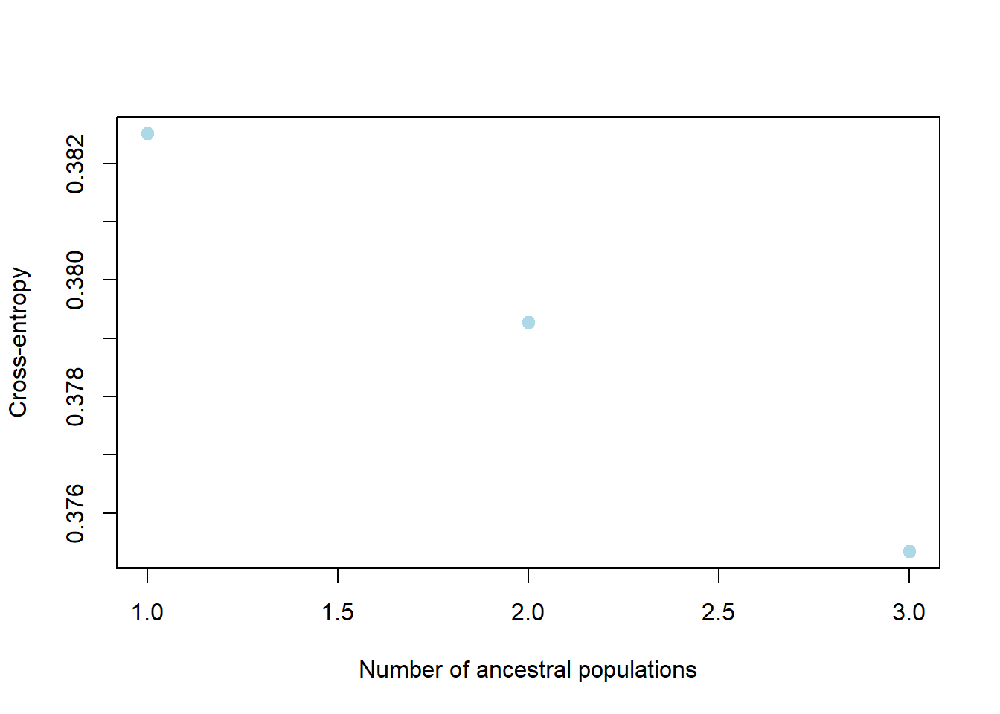
Completed: gl.run.snmf # Plot ancestry coefficients and order individuals by dendrogram
gl.plot.snmf(
snmf.result = r1,
border.ind = 0.25,
plot.K = 3,
plot.theme = NULL,
color.clusters = NULL,
ind.name = TRUE,
plot.out = TRUE,
plot.file = NULL,
plot.dir = NULL,
den = TRUE,
inverse.den = TRUE,
x = platypus.gl,
plot.colors.pop = c("red", "blue", "green")
)Starting gl.plot.snmf
Starting gl.colors
Selected color type structure
Completed: gl.colors
Calculating the distance matrix -- manhattan Warning: `aes_()` was deprecated in ggplot2 3.0.0.
ℹ Please use tidy evaluation idioms with `aes()`
ℹ The deprecated feature was likely used in the dartR.popgen package.
Please report the issue at <https://groups.google.com/g/dartr?pli=1>.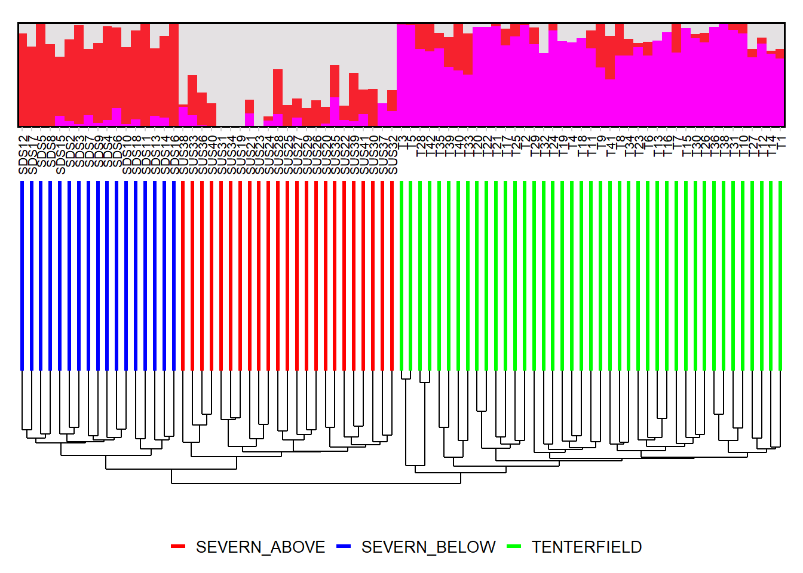
Completed: gl.plot.snmf Smear plots
Smear plots help visualise locus informativeness and marker behaviour across datasets.
# SNP data: remove loci with incomplete call rate and monomorphic loci
t1 <- gl.filter.callrate(platypus.gl, threshold = 1, mono.rm = TRUE)Starting gl.filter.callrate
Processing genlight object with SNP data
Warning: data include loci that are scored NA across all individuals.
Consider filtering using gl <- gl.filter.allna(gl)
Warning: Data may include monomorphic loci in call rate
calculations for filtering
Recalculating Call Rate
Removing loci based on Call Rate, threshold = 1 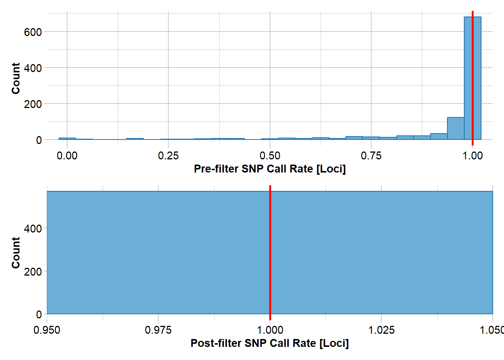
Completed: gl.filter.callrate gl.smearplot(
t1,
den = TRUE,
plot.colors = gl.colors("4")
)Starting gl.colors
Selected color type 4
Completed: gl.colors
Processing genlight object with SNP data
Starting gl.smearplot
Calculating the distance matrix -- manhattan 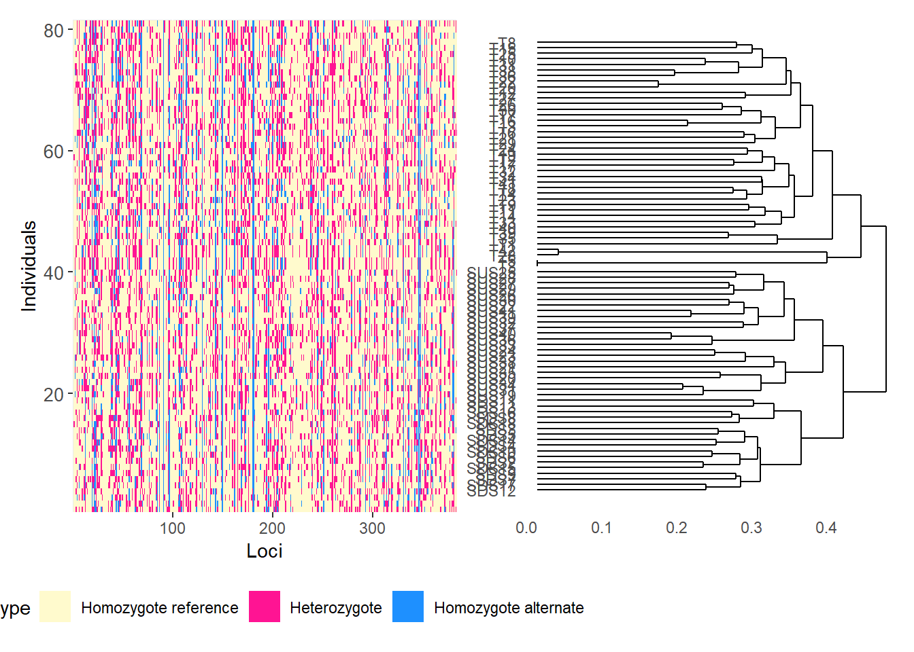
Completed: gl.smearplot 
# Reorder loci by FST to highlight the most differentiated loci
fst_loc <- data.frame(
order = 1:nLoc(t1),
fst = utils.basic.stats(t1)$perloc$Fstp
)
fst_loc <- fst_loc[order(fst_loc$fst, decreasing = TRUE), ]
t1 <- t1[, fst_loc$order]
gl.smearplot(
t1,
den = TRUE,
plot.colors = gl.colors("4")
)Starting gl.colors
Selected color type 4
Completed: gl.colors
Processing genlight object with SNP data
Starting gl.smearplot
Calculating the distance matrix -- manhattan 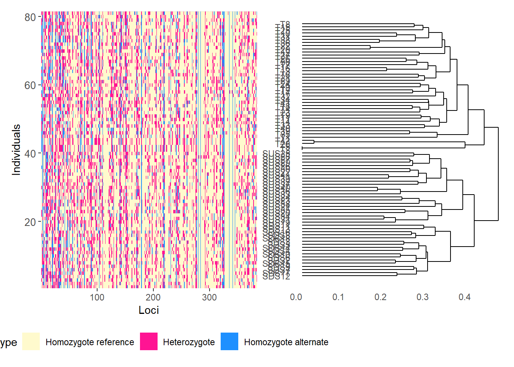
Completed: gl.smearplot 
# SilicoDArT data
t2 <- testset.gs
gl.smearplot(
t2,
den = TRUE,
plot.colors = gl.colors("4")
)Starting gl.colors
Selected color type 4
Completed: gl.colors
Processing genlight object with Presence/Absence (SilicoDArT) data
Starting gl.smearplot 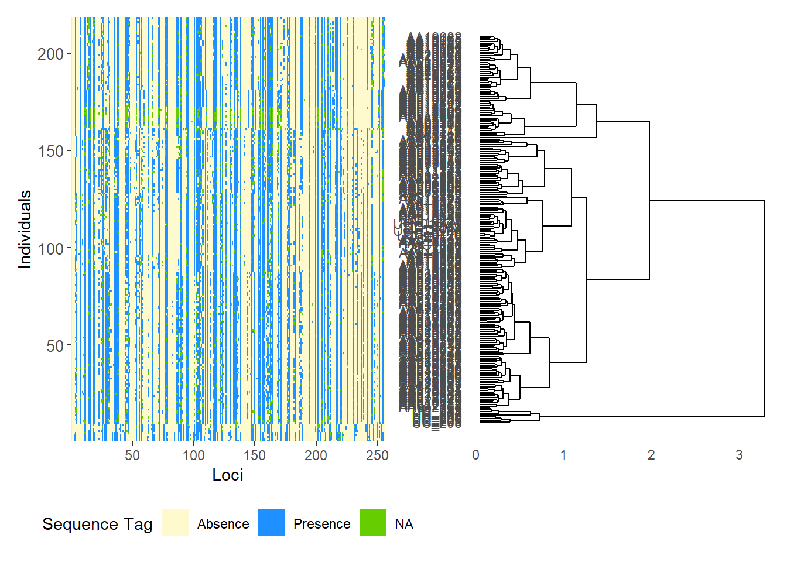
Completed: gl.smearplot 
# Reorder SilicoDArT loci by PIC (polymorphism information content)
pic_loc <- data.frame(
order = 1:nLoc(t2),
pic = t2$other$loc.metrics$PIC
)
pic_loc <- pic_loc[order(pic_loc$pic, decreasing = TRUE), ]
t2 <- t2[, pic_loc$order]
gl.smearplot(
t2,
den = TRUE,
plot.colors = gl.colors("4")
)Starting gl.colors
Selected color type 4
Completed: gl.colors
Processing genlight object with Presence/Absence (SilicoDArT) data
Starting gl.smearplot 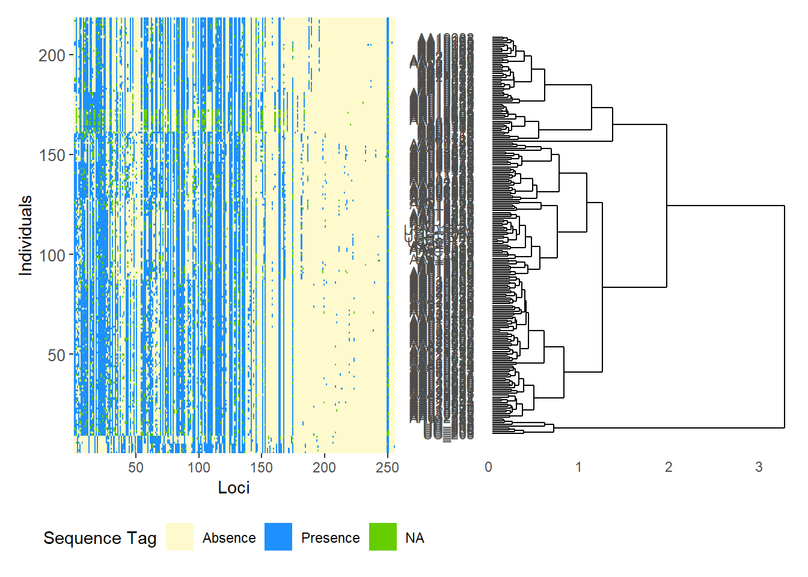
Completed: gl.smearplot 
# Group individuals by population
gl.smearplot(
platypus.gl,
group.pop = TRUE,
plot.colors = gl.colors("4")
)Starting gl.colors
Selected color type 4
Completed: gl.colors
Processing genlight object with SNP data
Warning: data include loci that are scored NA across all individuals.
Consider filtering using gl <- gl.filter.allna(gl)
Starting gl.smearplot 
Completed: gl.smearplot 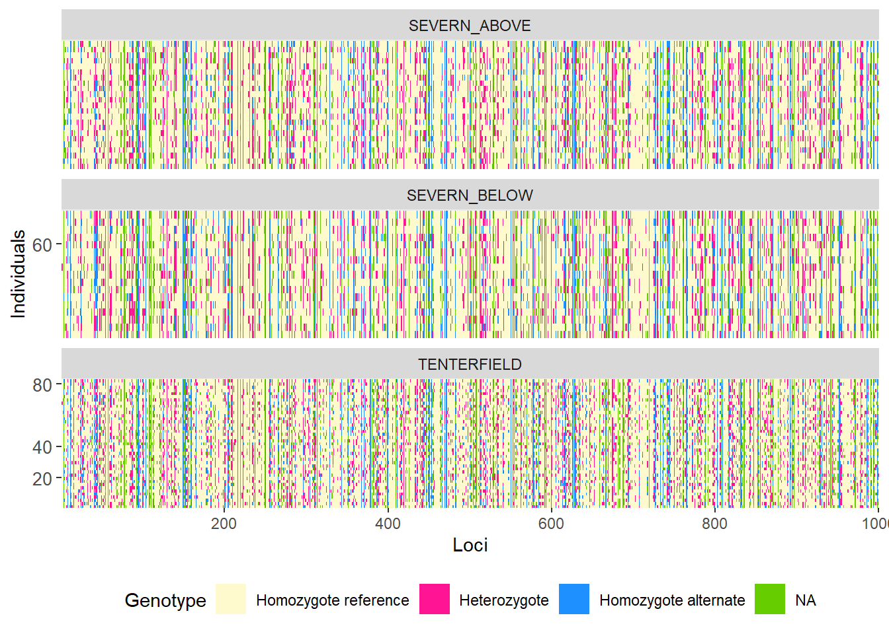
gl.smearplot(
bandicoot.gl,
den = TRUE,
plot.colors = gl.colors("4")
)Starting gl.colors
Selected color type 4
Completed: gl.colors
Processing genlight object with SNP data
Starting gl.smearplot
Calculating the distance matrix -- manhattan 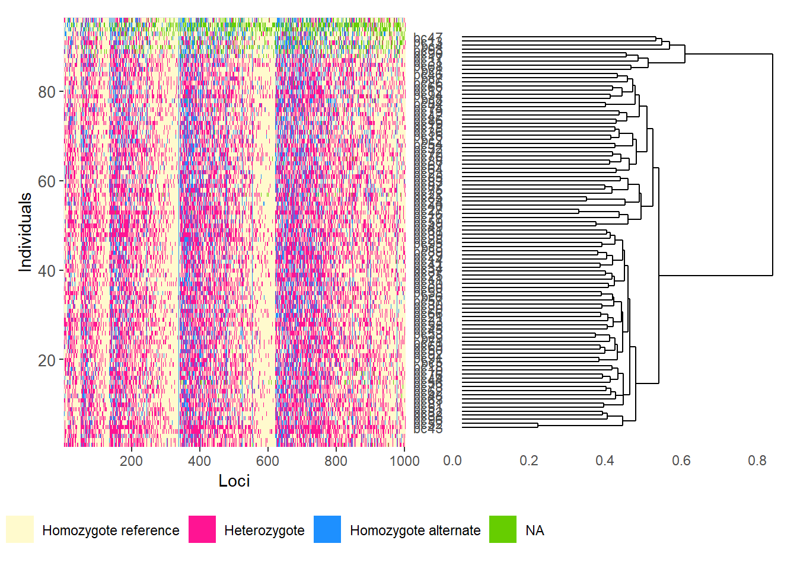
Completed: gl.smearplot 
Using genomic resources
BLAST
BLAST (Basic Local Alignment Search Tool) is a fast sequence-comparison method used to search a query sequence against a reference database and identify local matches.
In dartRverse, gl.blast() can create FASTA files, prepare a BLAST database, run BLAST, and retain the best hit per sequence.
BLAST+ can be downloaded from:
https://ftp.ncbi.nlm.nih.gov/blast/executables/blast+/LATEST/
Common BLAST nucleotide tasks
- megablast: fastest option for highly similar DNA sequences
- dc-megablast: better for more divergent but still related sequences
- blastn: general-purpose nucleotide search
- blastn-short: optimised for short sequences such as primers or probes
t1 <- platypus.gl
t1 <- gl.blast(
x = t1,
ref_genome = "./data/chr_X3_mOrnAna1.pri.v4.fa.gz",
task = "megablast",
Percentage_identity = 70,
Percentage_overlap = 0.8,
bitscore = 50,
number_of_threads = 2
)Starting gl.blast
Starting BLASTing
Starting filtering
49 sequences were aligned after filtering NOTE: Retrieve output files from tempdir using
gl.list.reports() and gl.print.reports()
Completed: gl.blast Assign chromosome names and SNP positions
head(t1$other$loc.metrics) qseqid AlleleID CloneID
1 1 45055704|F|0-36:G>A-36:G>A 45055704
2 2 45063962|F|0-13:T>C-13:T>C 45063962
3 3 45063222|F|0-23:C>T-23:C>T 45063222
4 4 45067747|F|0-53:G>A-53:G>A 45067747
5 5 45068299|F|0-65:G>C-65:G>C 45068299
6 6 45062106|F|0-54:A>C-54:A>C 45062106
AlleleSequence
1 TGCAGATGCTCTGTTGGATGCCGGCACTTTAGCAGCGTAAAACTGCAATCCATTTTTGTGATCGGTTTA
2 TGCAGCTGTTTCATTCTGCTCCAAGTGATTGTTTGCATGGCCCGGACTGTGGATCCCTCATTGGCTTTT
3 TGCAGCACAGAGAAGTTAAGTGACTTACCCAAGGTCACACAGCAAACAAATGGCAGAGCCAGCTTTACA
4 TGCAGAAGGCGTCAGCAGGCCGTGGTCGGGGGAGGGGGGAGGTGGTGATGAGGGAACAAATGGAAGTTG
5 TGCAGTGAAAGCAAGTCAAACCTGGTCAGTCGGCAAAAAGATGATATTTTGTAAACCCAGTTGCTGTCT
6 TGCAGACAGTTAGTGCTCGATCAAAACAACCGATAGATTGATCCCAAACAAAATAGAAATATTTCACCC
TrimmedSequence
1 TGCAGATGCTCTGTTGGATGCCGGCACTTTAGCAGCGTAAAACTGCAATCCATTTTTGTGATCGGTTTA
2 TGCAGCTGTTTCATTCTGCTCCAAGTGATTGTTTGCATGGCCCGGACTGTGGATCCCTCATTGGCTTTT
3 TGCAGCACAGAGAAGTTAAGTGACTTACCCAAGGTCACACAGCAAACAAATGGCAGAGCCAGCTTTACA
4 TGCAGAAGGCGTCAGCAGGCCGTGGTCGGGGGAGGGGGGAGGTGGTGATGAGGGAACAAATGGAAGTTG
5 TGCAGTGAAAGCAAGTCAAACCTGGTCAGTCGGCAAAAAGATGATATTTTGTAAACCCAGTTGCTGTCT
6 TGCAGACAGTTAGTGCTCGATCAAAACAACCGATAGATTGATCCCAAACAAAATAGAAATATTTCACCC
Chrom_Platypus_Chrom_NCBIv1 ChromPos_Platypus_Chrom_NCBIv1
1 NC_041731.1_chromosome_4 2438118
2 NC_041728.1_chromosome_1 32077451
3 NC_041749.1_chromosome_X1 60313949
4 NC_041729.1_chromosome_2 36086255
5 NC_041728.1_chromosome_1 27775762
6 NC_041728.1_chromosome_1 34408296
AlnCnt_Platypus_Chrom_NCBIv1 AlnEvalue_Platypus_Chrom_NCBIv1 SNP
1 1 1.62e-28 36:G>A
2 1 7.52e-27 13:T>C
3 3 7.52e-27 23:C>T
4 1 7.52e-27 53:G>A
5 1 7.52e-27 65:G>C
6 1 1.62e-28 54:A>C
SnpPosition CallRate OneRatioRef OneRatioSnp FreqHomRef FreqHomSnp
1 36 0.9954128 0.9953917 0.09677419 0.9032258 0.004608295
2 13 0.8807339 0.9739583 0.05208333 0.9479167 0.026041667
3 23 0.7110092 0.8580645 0.14193548 0.8580645 0.141935484
4 53 0.9954128 0.9539171 0.16129032 0.8387097 0.046082949
5 65 0.8944954 0.9897436 0.01538462 0.9846154 0.010256410
6 54 0.9954128 1.0000000 0.05990783 0.9400922 0.000000000
FreqHets PICRef PICSnp AvgPIC AvgCountRef AvgCountSnp RepAvg
1 0.092165899 0.009174117 0.17481790 0.09199601 16.03717 10.04000 0.99
2 0.026041667 0.050726997 0.09874132 0.07473416 12.36250 12.30000 1.00
3 0.000000000 0.243579605 0.24357960 0.24357960 17.07927 9.82759 1.00
4 0.115207373 0.087918622 0.27055151 0.17923507 27.85098 18.06122 1.00
5 0.005128205 0.020302433 0.03029586 0.02529915 5.03814 4.40000 1.00
6 0.059907834 0.000000000 0.11263777 0.05631889 20.88519 11.86667 1.00
clone uid rdepth monomorphs maf OneRatio PIC sacc
1 45055704 45055704-36 16.9 NA NA NA NA <NA>
2 45063962 45063962-13 12.7 NA NA NA NA <NA>
3 45063222 45063222-23 16.1 NA NA NA NA NC_041751.1
4 45067747 45067747-53 29.5 NA NA NA NA <NA>
5 45068299 45068299-65 5.1 NA NA NA NA <NA>
6 45062106 45062106-54 21.6 NA NA NA NA <NA>
stitle
1 <NA>
2 <NA>
3 NC_041751.1 Ornithorhynchus anatinus isolate Pmale09 chromosome X3, mOrnAna1.pri.v4, whole genome shotgun sequence
4 <NA>
5 <NA>
6 <NA>
qseq
1 <NA>
2 <NA>
3 TGCAGCACAGAGAAGTTAAGTGACTTACCCAAGGTCACACAGCAAACAAATGGCAGAGC
4 <NA>
5 <NA>
6 <NA>
sseq nident mismatch
1 <NA> NA NA
2 <NA> NA NA
3 TGAAGCACAGAGAAGTTAAGTGACTTACCCAAGGTCACACAGCAAGCATTTGGCAGAGC 55 4
4 <NA> NA NA
5 <NA> NA NA
6 <NA> NA NA
pident length evalue bitscore qstart qend sstart send gapopen gaps
1 NA NA NA NA NA NA NA NA NA NA
2 NA NA NA NA NA NA NA NA NA NA
3 93.22 59 5.58e-18 87.9 1 59 31776904 31776962 0 0
4 NA NA NA NA NA NA NA NA NA NA
5 NA NA NA NA NA NA NA NA NA NA
6 NA NA NA NA NA NA NA NA NA NA
qlen slen PercentageOverlap
1 NA NA NA
2 NA NA NA
3 69 33863336 0.8550725
4 NA NA NA
5 NA NA NA
6 NA NA NAt1$position <- t1$other$loc.metrics$ChromPos_Platypus_Chrom_NCBIv1
t1$chromosome <- t1$other$loc.metrics$Chrom_Platypus_Chrom_NCBIv1
head(t1$chromosome)[1] NC_041731.1_chromosome_4 NC_041728.1_chromosome_1
[3] NC_041749.1_chromosome_X1 NC_041729.1_chromosome_2
[5] NC_041728.1_chromosome_1 NC_041728.1_chromosome_1
104 Levels: NC_041728.1_chromosome_1 ... NW_021638280.1_scaffold_98_arrow_ctg1SNP density and linkage disequilibrium
p1 <- gl.plot.snp.density(
x = t1,
bin.size = 1e6,
min.snps = 20,
min.length = 1e6,
color.palette = viridis::viridis,
chr.info = TRUE,
plot.title = NULL,
plot.theme = theme_dartR()
)Starting gl.plot.snp.density
Processing genlight object with SNP data
Warning: data include loci that are scored NA across all individuals.
Consider filtering using gl <- gl.filter.allna(gl)
Retained 921 SNPs after initial filtering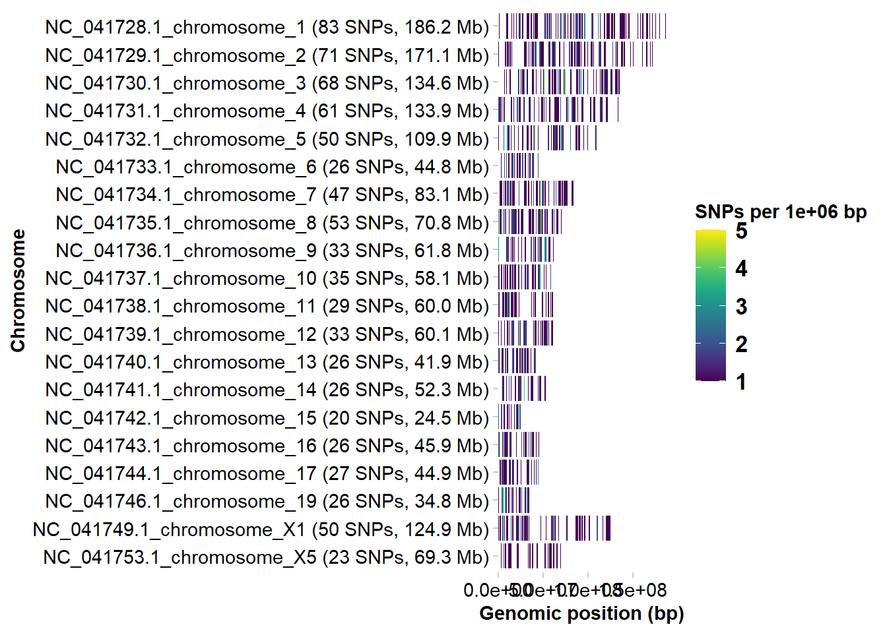
Completed: gl.plot.snp.density r2 <- gl.report.ld.map(t1, ld.max.pairwise = 1e7)Starting gl.report.ld.map
Processing genlight object with SNP data
Warning: data include loci that are scored NA across all individuals.
Consider filtering using gl <- gl.filter.allna(gl)
Calculating pairwise LD in population SEVERN_ABOVE
Calculating pairwise LD in population SEVERN_BELOW
Calculating pairwise LD in population TENTERFIELD Warning in snpStats::ld(genotype_loci, depth = ld_depth_b, stats = ld.stat):
depth too large; it has been reset to 1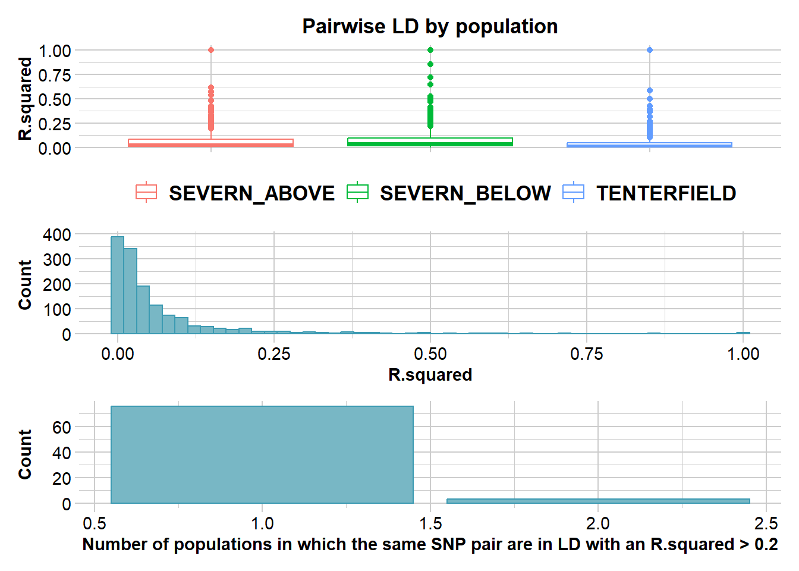
Completed: gl.report.ld.map p2 <- gl.ld.distance(r2, ld.resolution = 1e6)Starting gl.ld.distance 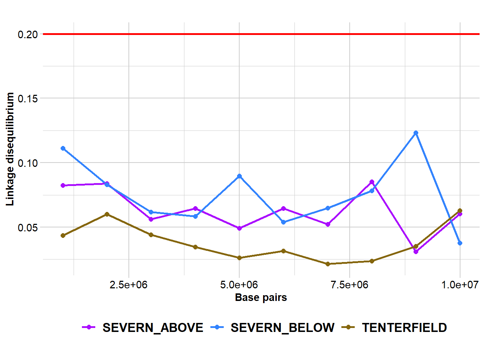
pop distance ld.stat
<fctr> <num> <num>
SEVERN_ABOVE 1000001 0.08251346
SEVERN_ABOVE 2000001 0.08373020
SEVERN_ABOVE 3000001 0.05625971
SEVERN_ABOVE 4000001 0.06451984
SEVERN_ABOVE 5000001 0.04912791
SEVERN_ABOVE 6000001 0.06466727
SEVERN_ABOVE 7000001 0.05216236
SEVERN_ABOVE 8000001 0.08535570
SEVERN_ABOVE 9000001 0.03095726
SEVERN_ABOVE 9992140 0.06035656
SEVERN_BELOW 1000001 0.11114617
SEVERN_BELOW 2000001 0.08300740
SEVERN_BELOW 3000001 0.06182691
SEVERN_BELOW 4000001 0.05838833
SEVERN_BELOW 5000001 0.08983620
SEVERN_BELOW 6000001 0.05403554
SEVERN_BELOW 7000001 0.06469990
SEVERN_BELOW 8000001 0.07821592
SEVERN_BELOW 9000001 0.12316637
SEVERN_BELOW 9992140 0.03769610
TENTERFIELD 1000001 0.04356637
TENTERFIELD 2000001 0.06010031
TENTERFIELD 3000001 0.04423106
TENTERFIELD 4000001 0.03461071
TENTERFIELD 5000001 0.02620197
TENTERFIELD 6000001 0.03147021
TENTERFIELD 7000001 0.02150052
TENTERFIELD 8000001 0.02372314
TENTERFIELD 9000001 0.03530261
TENTERFIELD 9992140 0.06281562
pop distance ld.stat
Completed: gl.ld.distance Haploview-style LD plotting

popNames(t1)[1] "SEVERN_ABOVE" "SEVERN_BELOW" "TENTERFIELD" tbl_chr <- table(t1$chromosome)
head(tbl_chr)
NC_041728.1_chromosome_1 NC_041729.1_chromosome_2
79 83 71
NC_041730.1_chromosome_3 NC_041731.1_chromosome_4 NC_041732.1_chromosome_5
68 61 50 chr <- names(tbl_chr)[2]
# Reminder:
# Individuals are stored in rows and loci are stored in columns
pos_snp_chr <- t1[, t1$chromosome == chr]$positionp2 <- gl.ld.haplotype(
x = t1,
pop_name = "TENTERFIELD",
chrom_name = chr,
ld_max_pairwise = 1e7,
maf = 0.05,
ld_stat = "R.squared",
ind.limit = 10,
min_snps = 10,
ld_threshold_haplo = 0.5,
plot_het = TRUE,
snp_pos = TRUE,
target.snp1 = pos_snp_chr[43],
target.snp2 = pos_snp_chr[80],
target.snp3 = pos_snp_chr[20],
col.all = "black",
col.target1 = "green",
col.target2 = "blue",
col.target3 = "red",
coordinates = NULL,
color_haplo = "viridis",
color_het = "deeppink"
)Starting gl.ld.haplotype
Processing genlight object with SNP data
Warning: data include loci that are scored NA across all individuals.
Consider filtering using gl <- gl.filter.allna(gl)
Calculating pairwise LD in population TENTERFIELD
Analysing chromosome NC_041728.1_chromosome_1
The maximum distance at which LD should be calculated
(ld_max_pairwise) is too short for chromosome NC_041728.1_chromosome_1 . Setting this distance to 26641920 bpWarning: `fortify(<SpatialPolygonsDataFrame>)` was deprecated in ggplot2 3.4.4.
ℹ Please migrate to sf.
ℹ The deprecated feature was likely used in the dartR.popgen package.
Please report the issue at <https://groups.google.com/g/dartr?pli=1>.Regions defined for each Polygons No haplotypes were identified for chromosome NC_041728.1_chromosome_1 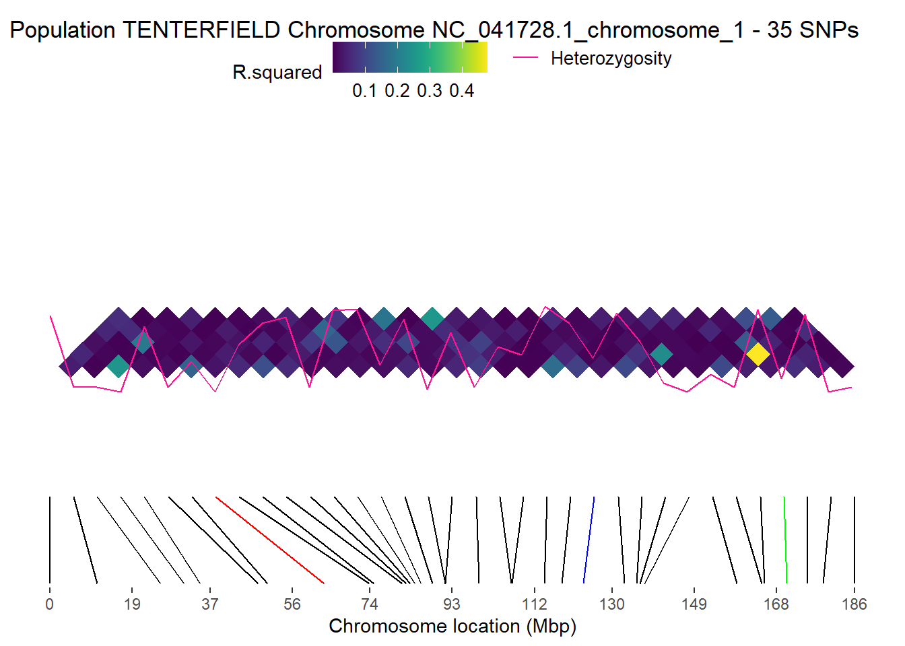
[1] population chromosome haplotype start
[5] end start_ld_plot end_ld_plot midpoint
[9] midpoint_ld_plot labels
<0 rows> (or 0-length row.names)
Completed: gl.ld.haplotype GFF files
A GFF file (General Feature Format) is a plain-text annotation file used to describe genomic features such as genes, exons, CDS regions, mRNA, and regulatory elements.
It stores genomic coordinates together with metadata such as feature type, strand, source, and identifiers.
Useful annotation sources:
- NCBI Genome: https://www.ncbi.nlm.nih.gov/datasets/genome/
- Ensembl: https://ensembl.org/
# Read the first two lines of a GFF file
readLines(
"./data/chr_X3_mOrnAna1.pri.v4.gff",
n = 2
)[1] "NC_041751.1\tRefSeq\tregion\t1\t33863336\t.\t+\t.\tID=NC_041751.1:1..33863336;Dbxref=taxon:9258;Name=X3;chromosome=X3;gbkey=Src;genome=chromosome;isolate=Pmale09;mol_type=genomic DNA;sex=male;tissue-type=liver%3B muscle"
[2] "NC_041751.1\tGnomon\tgene\t18173\t35874\t.\t-\t.\tID=gene-SERPINB7;Dbxref=GeneID:100091686;Name=SERPINB7;gbkey=Gene;gene=SERPINB7;gene_biotype=protein_coding" # Match chromosome names to the format used in the GFF file
# This removes everything after the second underscore
t1$chromosome <- as.factor(
sub("^(([^_]*_){1}[^_]*)_.*$", "\\1", t1$chromosome)
)chr <- "NC_041751.1"
loci <- locNames(t1[, t1@chromosome == chr])
# Map loci to the nearest gene feature in the GFF annotation
r3 <- gl.find.genes.for.loci(
t1,
gff.file = "./data/chr_X3_mOrnAna1.pri.v4.gff",
loci = loci
)Starting gl.find.genes.for.loci
Processing genlight object with SNP data
Warning: data include loci that are scored NA across all individuals.
Consider filtering using gl <- gl.filter.allna(gl)
Loading GFF and parsing attributes...
Assigned nearest gene for 10 locus/loci.head(r3) locus chrom pos gene_start gene_end gene_type gene_id
<char> <char> <int> <int> <int> <char> <char>
1: 45054880-40-A/G NC_041751.1 26858724 26751261 26866010 gene TMEM232
2: 45055524-68-G/A NC_041751.1 11985457 11609922 12080961 gene FBXL7
3: 45057304-21-T/C NC_041751.1 18143735 17760331 18327111 gene GMDS
4: 45058069-46-T/A NC_041751.1 14509841 14166992 14670686 gene CDH12
5: 45058260-5-G/A NC_041751.1 18090676 17760331 18327111 gene GMDS
6: 45060231-46-C/T NC_041751.1 3173894 3170014 3467740 gene FHOD3
gene_name gene_symbol gene_product
<char> <char> <char>
1: TMEM232 <NA> <NA>
2: FBXL7 <NA> <NA>
3: GMDS <NA> <NA>
4: CDH12 <NA> <NA>
5: GMDS <NA> <NA>
6: FHOD3 <NA> <NA>
gene_attributes
<char>
1: ID=gene-TMEM232;Dbxref=GeneID:100082537;Name=TMEM232;gbkey=Gene;gene=TMEM232;gene_biotype=protein_coding
2: ID=gene-FBXL7;Dbxref=GeneID:100080152;Name=FBXL7;gbkey=Gene;gene=FBXL7;gene_biotype=protein_coding
3: ID=gene-GMDS;Dbxref=GeneID:100079151;Name=GMDS;gbkey=Gene;gene=GMDS;gene_biotype=protein_coding
4: ID=gene-CDH12;Dbxref=GeneID:100076535;Name=CDH12;gbkey=Gene;gene=CDH12;gene_biotype=protein_coding
5: ID=gene-GMDS;Dbxref=GeneID:100079151;Name=GMDS;gbkey=Gene;gene=GMDS;gene_biotype=protein_coding
6: ID=gene-FHOD3;Dbxref=GeneID:100074923;Name=FHOD3;gbkey=Gene;gene=FHOD3;gene_biotype=protein_coding
distance_bp nearest_side
<int> <char>
1: 0 inside
2: 0 inside
3: 0 inside
4: 0 inside
5: 0 inside
6: 0 inside# Find loci located within genes matching a name or pattern
r4 <- gl.find.loci.in.genes(
t1,
gff.file = "./data/chr_X3_mOrnAna1.pri.v4.gff",
gene = "MHC",
save2tmp = TRUE
)LOADING GFF FILE...
MHC genes detected: 3
Loci overlapping MHC intervals: 0other stuff
Learning outcomes
In this session we will explore some of the newest and most exciting functions recently added to the dartRverse ecosystem.
Session overview
gl.map.interactive— Interactive maps with gene flow- Visualising population locations on an interactive leaflet map
- Overlaying a directed gene flow graph using private allele estimates
- Interpreting arrow colour and thickness as gene flow magnitude
gl.gen2fbm,gl.fbm2gen,gl.pca— The FBM memory model- What is a File-Backed Matrix (FBM) and why does it matter?
- Comparing the compressed dartR object vs the FBM representation
- Why imputation is required before running PCA on FBM objects
- Benchmarking: runtime comparison of standard vs FBM-backed PCA
- Demonstrating that imputed FBM-PCA results are identical to standard PCA
gl.print.history— Your analysis audit trail- Recovering the filter history applied to a genlight object
- Practical use cases
gl.map.interactive
Package: dartR.base
gl.map.interactive creates an interactive leaflet map that plots the sampling locations of populations stored in a genlight object. Beyond a simple location map, the function can overlay a directed gene flow network: you supply a pairwise migration matrix and the function draws arrows between populations whose colour and line thickness scale with the estimated magnitude of gene flow, making asymmetric dispersal immediately visible.
Basic interactive map
The simplest call only needs your genlight object. We use the built-in possums.gl dataset, which contains five possum populations across south-eastern Australia.
# Basic interactive map — population locations only
gl.map.interactive(possums.gl)Starting gl.map.interactive
Processing genlight object with SNP data
Completed: gl.map.interactive You should see a leaflet map with one marker per population. Hover or click on a marker to see the population name and sample size.
Estimating private alleles as a gene flow proxy
Before drawing directional arrows we need a directed matrix encoding the relative strength of gene flow between every pair of populations. gl.report.pa returns a data frame with columns pop1, pop2, priv1 (private alleles in pop1 not in pop2) and priv2 (private alleles in pop2 not in pop1). We reshape this into a square populations × populations matrix where entry [i, j] holds the number of private alleles in population i that are absent in population j — a directional proxy for gene flow from i → j.
# Report private alleles — returns a data frame with columns pop1, pop2, priv1, priv2
pa_df <- gl.report.pa(possums.gl[1:120,], plot.display = FALSE, verbose = 0) Warning: no loci listed to keep! Genlight object returned unchanged
Warning: no loci listed to keep! Genlight object returned unchangedhead(pa_df) p1 p2 pop1 pop2 N1 N2 fixed priv1 priv2 Chao1 Chao2 totalpriv AFD asym
1 1 2 A B 30 30 0 1 24 NA 0 25 0.309 NA
2 1 3 A C 30 30 0 1 24 NA 0 25 0.302 NA
3 1 4 A D 30 30 2 49 21 0 0 70 0.370 NA
4 2 3 B C 30 30 0 0 0 0 0 0 0.180 NA
5 2 4 B D 30 30 1 52 1 0 NA 53 0.332 NA
6 3 4 C D 30 30 1 52 1 0 NA 53 0.314 NA
asym.sig
1 NA
2 NA
3 NA
4 NA
5 NA
6 NA# Get sorted population names
pops <- sort(unique(c(as.character(pa_df$pop1), as.character(pa_df$pop2))))
# Initialise an empty square matrix
pa_matrix <- matrix(0, nrow = length(pops), ncol = length(pops),
dimnames = list(pops, pops))
# Fill: priv1 = private alleles in pop1 absent from pop2 → flow pop1 → pop2
for (i in seq_len(nrow(pa_df))) {
p1 <- as.character(pa_df$pop1[i])
p2 <- as.character(pa_df$pop2[i])
pa_matrix[p1, p2] <- pa_df$priv1[i] # pop1 → pop2
pa_matrix[p2, p1] <- pa_df$priv2[i] # pop2 → pop1
}
pa_matrix A B C D
A 0 1 1 49
B 24 0 0 52
C 24 0 0 52
D 21 1 1 0Directed gene flow map
Pass the square matrix to gl.map.interactive. Arrow thickness and colour scale with the private allele count, so source and sink populations are immediately apparent.
# Interactive map with directed gene flow overlay
gl.map.interactive(
possums.gl[1:120],
matrix = pa_matrix,symmetric = FALSE)gl.gen2fbm, gl.fbm2gen & gl.pca — The FBM memory model
Packages: dartR.base (conversion functions), dartR.popgen (PCA)
Background: two representations of a dartR object
A standard dartR / genlight object stores the SNP matrix in a highly compressed bitwise format. This keeps the object small in memory — often only a few MB even for tens of thousands of loci — but every mathematical operation must first decompress the data, which adds overhead for computationally intensive analyses such as PCA on very large datasets.
The File-Backed Matrix (FBM) representation, powered by the bigstatsr package, stores the genotype matrix in a binary flat file on disk. The file is larger than the compressed genlight object, but individual rows and columns can be accessed directly without decompression, making linear algebra operations (including PCA via randomised SVD) dramatically faster for large datasets.
| Property | Compressed genlight | FBM-backed |
|---|---|---|
| Object size in RAM | Very small | Small (only file handle) |
| File on disk | None | Large flat file |
Can be saved with saveRDS |
✅ Yes | ❌ No — file path becomes invalid |
| PCA / linear algebra speed | Slower (decompress first) | Much faster |
| Requires imputation for PCA | Optional | Required |
Important: An FBM object cannot be saved across sessions with
saveRDS/save. It must be recreated each time. Think of it as a fast in-session cache, not a storage format.
Converting to and from FBM
# Simulate a medium-sized genlight object
gl_sim <- glSim(n.ind = 200, n.snp.nonstruc = 5000, ploidy = 2)
gl_sim /// GENLIGHT OBJECT /////////
// 200 genotypes, 5,000 binary SNPs, size: 536 Kb
0 (0 %) missing data
// Basic content
@gen: list of 200 SNPbin
@ploidy: ploidy of each individual (range: 2-2)
// Optional content
@other: a list containing: ancestral.pops class(gl_sim) <- "dartR"
# Convert to FBM — writes the flat file and attaches it to the object
gl_fbm <- gl.gen2fbm(gl_sim)Starting gl.gen2fbm
Processing genlight object with SNP data
Completed: gl.gen2fbm # Inspect the FBM slot
gl_fbm@fbm # bigstatsr FBM objectA Filebacked Big Matrix of type 'code 256' with 200 rows and 5000 columns.dim(gl_fbm@fbm) # rows = individuals, cols = loci[1] 200 5000# Compare object sizes in RAM (the FBM data lives on disk, not in RAM)
cat("Compressed genlight: ", object.size(gl_sim) / 1024, "KB\n")Compressed genlight: 535.75 KBcat("FBM genlight object: ", object.size(gl_fbm) / 1024, "KB\n")FBM genlight object: 5.28125 KBConverting back is equally straightforward:
# Convert back to standard compressed genlight
gl_back <- gl.fbm2gen(gl_fbm)
gl_back ********************
*** DARTR OBJECT ***
********************
** 200 genotypes, 5,000 SNPs , size: 535.9 Kb
missing data: 0 (=0 %) scored as NA
** Genetic data
@gen: list of 200 SNPbin
@ploidy: ploidy of each individual (range: 2-2)
** Additional data
@ind.names: no individual labels
@loc.names: no locus labels
@loc.all: no allele labels
@pop: no population lables for individuals
@other: a list containing: ancestral.pops
@other$latlon[g]: no coordinates attachedRuntime benchmark: standard PCA vs FBM-backed PCA
library(patchwork)
# Simulate a larger dataset to make the speed difference apparent
set.seed(1)
gl_large <- glSim(n.ind = 200, n.snp.nonstruc = 5000, ploidy = 2)
class(gl_large) <- "dartR"
pop(gl_large) <- rep(paste0("Pop", 1:4), each = 50)
indNames(gl_large) <- paste0("Ind", 1:200)
# Prepare FBM version with imputation
gl_large_fbm <- gl.gen2fbm(gl_large)Starting gl.gen2fbm
Processing genlight object with SNP data
Completed: gl.gen2fbm system.time(pc_gen <-gl.pcoa(gl_large, verbose = 0))
Starting gl.colors
Selected color type 2
Completed: gl.colors user system elapsed
7.35 0.08 7.43 system.time(pc_fbm <- gl.pcoa(gl_large_fbm, verbose = 0))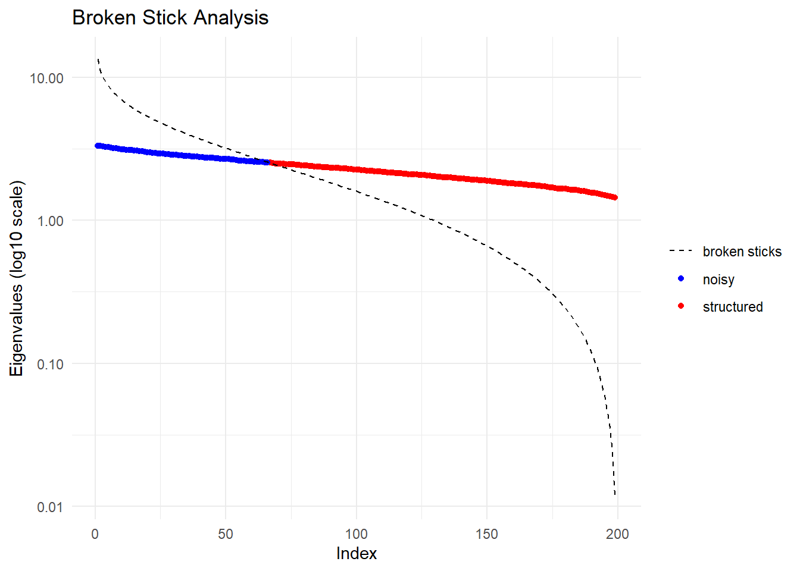
Starting gl.colors
Selected color type 2
Completed: gl.colors user system elapsed
1.02 0.37 1.52 p1 <- gl.pcoa.plot(pc_gen, gl_large, verbose = 0) +
ggplot2::ggtitle("Standard PCA (compressed genlight)")
pc_fbm$scores[,1:2] <- -pc_fbm$scores[,1:2] # flip axes for better visual comparison
p2 <- gl.pcoa.plot(pc_fbm, gl_large_fbm, verbose = 0) +
ggplot2::ggtitle("FBM-backed PCA (imputed FBM)")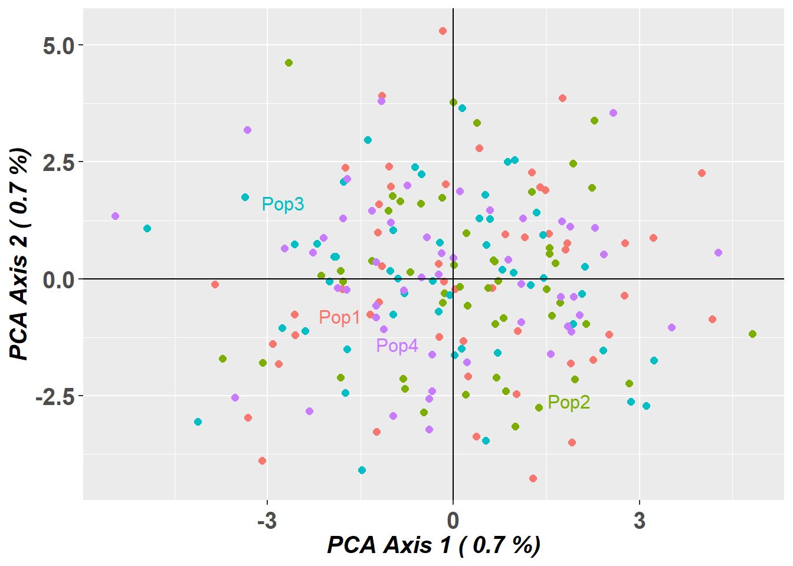
p1 + p2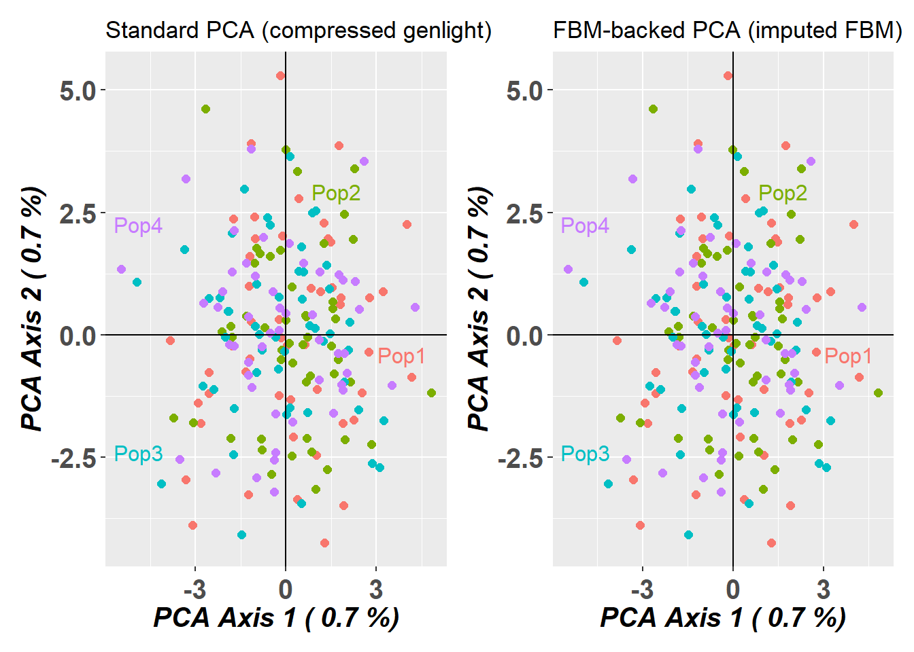
The FBM pathway is typically 5–50× faster for datasets with >10 000 loci, with the speedup increasing with dataset size.
Are the results identical? Side-by-side PCA plots
Take-home message: Use the standard compressed genlight for everyday work and storage. Switch to the FBM representation when running computationally intensive analyses on large datasets, remembering to impute first and never to save the FBM object to disk.
gl.print.history
Package: dartR.base
Every filtering function in dartR automatically appends a record of what was done — thresholds used, loci/individuals removed, timestamp — to an internal history log stored in gl@other$history. gl.print.history retrieves and displays this log in a human-readable format.
This is invaluable when you return to an analysis weeks later and need to reconstruct exactly which filters were applied, or when documenting your QC pipeline for a methods section.
# Start with the built-in testset and apply a series of filters
gl_work <- testset.gl
gl_work <- gl.filter.callrate(gl_work, method = "loc", threshold = 0.95, verbose = 0)
gl_work <- gl.filter.maf(gl_work, threshold = 0.05, verbose = 0)
gl_work <- gl.filter.monomorphs(gl_work, verbose = 0)
gl_work <- gl.filter.secondaries(gl_work, verbose = 0)
# Recover the complete filter audit trail
gl.print.history(gl_work)
| nr |history |
|:--:|:---------------------------------------------------------------------------------------|
| 1 |gl.read.dart(filename = "testset_SNPs_2Row.csv", ind.metafile = metadata,
probar = TRUE) |
| 2 |gl.filter.callrate(x = gl_work, method = "loc", threshold = 0.95, verbose = 0) |
| 3 |gl.filter.maf(x = gl_work, threshold = 0.05, verbose = 0) |
| 4 |gl.filter.monomorphs(x = gl_work, verbose = 0) |
| 5 |gl.filter.secondaries(x = gl_work, verbose = 0) |The output lists each function call in chronological order together with the key parameters and the number of loci/individuals retained at each step. When you share a filtered genlight object with a collaborator via saveRDS, the history travels with it — they can inspect your entire filter chain without needing to read through your script.
Tip: If you ever wonder “wait, did I filter for HWE on this object?”,
gl.print.historywill tell you immediately — no more scrolling through old scripts.
Additional reading
- bigstatsr — Privé F et al. (2018). Efficient analysis of large-scale genome-wide data with two R packages: bigstatsr and bigsnpr. Bioinformatics.
- dartRverse documentation — https://green-striped-gecko.github.io/dartR/
?gl.map.interactive,?gl.impute,?gl.print.history
Wrap up
In this session we covered three powerful additions to the dartRverse:
gl.map.interactivelets you visualise population locations and overlay directed gene flow networks derived from private allele estimates, with arrow thickness and colour encoding migration magnitude and direction.gl.gen2fbm/gl.fbm2gen/gl.pcaintroduce a File-Backed Matrix memory model that trades a larger disk footprint for dramatically faster linear algebra — ideal for PCA and similar analyses on large SNP datasets. The FBM object cannot be saved across sessions and requires imputation before PCA, but the resulting ordination is identical to the standard approach.gl.print.historyexposes the complete filter audit trail embedded in every dartR genlight object, making your analyses transparent, reproducible and easy to document.
Getting started with development - joining the dartR team
As an open-source project dartR encourages its users to actively contribute to the package, as far as development goes the more the merrier! By helping with development you can improve the quality of the package, limit bugs, and help with the development of new features.
That being said, open source is not a synonym for free for all! To ensure the stability and condition of the package remains high, there are a number of rules we must adhere to when developing new features.
As such in this tutorial, we’ll be providing an introduction as to the means by which you can become a developer, and actively contribute to the package. We’ll introduce you to the style guide, how to use it in the development of functions, provide a brief intro to github and how to manage pushing, pulling, merging and forking!
Session overview
- 1. Introduction to basics of development
- Starting with basics
- Writing functions
- 2. DartR style guide
- Roxygen2 documentation at start of functions
- Good practice for writing functions
- Using gl.document for writing start of functions
- 3. Introduction to github
- Repo’s
- Push/pull merge etc.
- Forking directories
- 4. Example - writing basic function
- gl.something.basic
- write basic function for printing or combining inputs
- 5. GitHub specifically for dartR
- fork directory
- create local git repo on rstudio
- create function - compile local copy - make sure package is installable - ie changes have broken the package
- commit/push to forked repo
- make pull/merge request from forked repo to original repo
- 6. Common errors/hangups
- ie errors with local variables not being defined etc.
- 7. Roundup/questions etc.
1. Basics of development and the dartR style guide
The dartR function: a skeleton
As discussed, there exists a variety of rules which we should adhere to as developers, in doing so we can ensure the quality, stability and uniformity of our work across platforms. We also mustn’t forget other developers exist! In all things open source, there are more than one set of eyes, so ensuring easy collaboration is the key to success.
As such we’ll begin with the basic structure of a dartR function, its appearance and the logic by which you should write your code. All dartR functions have the following skeleton:
- Introductory code based on roxygen2;
- Examples again coded in roxygen2;
- The initial function definition;
- Setting the verbosity level with the help of gl.set.verbosity();
- Validating the data passed to the function with the help of gl.check.datatype();
- Checking that the required dependencies are in place;
- Applying some function specific checks on the values passed to the function;
- Announcing the start of the function for the user with the help of utils.flag.start();
- DO THE JOB
- Delivering the graphical outputs
- Saving the graphical outputs as gglplot and other outputs to the session temporary directory;
- Adding to the history of the genlight object, for later recall;
- Announcing the closure of the function for the user;
- Returning any parameters
- Closing the function
We’ll step through each of these features in more detail to ensure you understand their inclusion.
Roxygen2 documentation
Roxygen2 is an R package used in the documentation of functions, primarily for the generation of help() queries, documentation files (.Rd) and the description blurbs
INCLUDE PHOTO OF ROXYGEN2 DOCUMENTATION HERE
Define the function
The next step is to define the function and its inputs:
INSERT PHOTOT OF DEFINTION
Set the verbosity level
Setting the verbosity allows the user to edit the verbosity of the output as required - including things such as function completion, output location, progress bars etc. There are 6 possible paramater values to choose from:
0 – silent or fatal errors. Good for batch processing. 1 – notifies begin and end, and fatal errors. 2 – notifies warnings and progress log, in addition to above. 3 – reports progress and results summary, in addition to above. 4 – to be implemented. 5 – displays a full report.
This value can either be set when calling the function using the parameter “verbose” or one can set the global verbosity level using verbosity <- gl.set.verbosity(value=n).
Apply checks of parameters
We now need to apply checks to the input parameters to ensure the user supplied data matches the format specified. We can achieve a simple check with the utils.check.datatype, which checks the main data supplied fits one of the following data types
- Genlight
- dist
- fd
- matrix
In addition you should apply your own parameter checks of user input. This ensures any errors that arise from incorrect formatting of data is explicitly mentioned as such in the function output. This avoids the outputting of vague often verbose system errors that may arise instead and may be difficult for the user to debug. We can illustrate this with an example:
Basic flags
Its important to flag the start of the script- to ensure the output displays when the job has commenced. We can do this with the utils.flag.start function.
In addition we also flag the start of the function with a # DO THE JOB tag: such as:
thingy <- function(a,b){
if(!(a == "num" | b == "num")){
stop("a and b wrong format")
}
# DO THE JOB
output <- a + b
return(output)
}Have some style! Programming with style
As a flexible programming language, R allows for a diversity of methods when tackling a problem. Consider the inclusion of packages designed to improve flow and structure and this effect is amplified even more so! As such it its important you write code not only for yourself but for those with whom you’re working.
As such perhaps the most important rule in this regard is to COMMENT!!!! By generously commenting your code (even where it may seem unnecessary), you lend your code a degree of readability that transcends the actual program itself. Even the most dense code can become more readable if commented correctly and it allows both yourself and other programmers to pick it up quickly and continue where you left off.
In addition it is important to properly indent and space your code. Given that R is lazily compiled, that is to say compiled line by line, it lacks the strict indentation required of other, compiled languages, such as C, C++ or Fortran.
For more info on what constitutes good, readable, efficient code - Hadley Wickham has written a comprehensive tome on the subject - Advanced R, for which there is a thorough treatment of style - http://adv-r.had.co.nz/Style.html.
2. Introduction to Github
- Repo's
- Push/pull merge etc.
- forking directoriesAs I’m sure many of you are aware - dartR’s code is hosted on GitHub - an opensource development platform for version management and control. This includes all of the base dependencies - such as dartR.base and dartRverse in addition to the expansion modules and experimental functions/versions being actively developed.
The manner in which this code is governed by a set of strict protocols (as mentioned above) - designed to protect the stability of the packages and ensure they’re (relatively) bug free. This can be summarised as below:
Repo’s
A repo or repository consists of the base from which all code is hosted. It contains a projects files, code and a history of the revisions done to said code. In addition is hosts branches - or copies of the original main branch - from which developers can work in isolation from the original code and edit at will.

As seen in the images below - the dartR.captive repo hosts a number of branches - each hosted by its respective developer. As such none of these developers directly edit the code present on the main branch - so as to avoid conflicts.

Clearly there is the potential for the local and remote branches established by individual developers to diverge from the work that has been contributed by others. To avoid working on stale branches, developers should follow the below procedure: 1. Pull the latest working version of dartR from the remote origin/dev to your local branch (e.g. dev_jacob). 2. Resolve any conflicts (hopefully few if you do all of this regularly). 3. Add new scripts or alter existing scripts, do a local build, and test the scripts function appropriately without error. 4. Commit any changes you have made to scripts, and include any files created by the local build. 5. Push your local branch (e.g. dev_jacob)to your remote branch (e.g. origin/dev_jacob)where it is then available to the Core dartR Team to evaluate your changes committed in 1 above, and ultimately merge with dev.

Forking a directory
As an alternate - you can also fork a directory and then push any changes made - without requiring developer access to the repo. This may be the best alternative if proposing a small change or if not expecting to make repeated changes to the package (ie you might only include some level of functionality YOU require).
To begin you simply press the fork button at the top of the repo home page:

This will then take you a page where you can specify how you’d like to fork the original page.

3. Example function - gl.does.something
Having introduced you to the basic of writing functions for dartR and github we’ll now go through the process of writing our own function and then pushing it to a fork.
gl.document
#' @name gl.document
#' @title Generate a roxygen2 Documentation Template for a Function
#' @description
#' Creates a skeleton \code{roxygen2} documentation file for a specified
#' function. The generated file contains standard documentation fields
#' including title, description, parameters, details, return value, examples,
#' and references. The output is written as a new \code{.R} file in the
#' specified directory.
#'
#' The function inspects the formal arguments of the target function and
#' automatically generates \code{@param} entries for each argument. This
#' provides a structured starting point for developing consistent
#' documentation across a package.
#'
#' @param func_name Name of the function to be documented (unquoted).
#' @param author_name Character string specifying the author of the function.
#' @param example_dataset Name of an example dataset to include in the
#' documentation examples (currently placeholder, not implemented).
#' @param outputDir Character string specifying the directory where the
#' documentation file will be written. The file will be named
#' \code{<func_name>.R}.
#'
#' @details
#' The function constructs a list of standard documentation fields and writes
#' them in roxygen2 format to a new file connection. Parameter names are
#' extracted using \code{formals()} and written as placeholder entries for
#' subsequent manual editing.
#'
#' The generated template includes the following sections:
#' \itemize{
#' \item \code{@name}
#' \item \code{@title}
#' \item \code{@description}
#' \item \code{@param}
#' \item \code{@details}
#' \item \code{@return}
#' \item \code{@author}
#' \item \code{@examples}
#' \item \code{@references}
#' }
#'
#' @return
#' A new \code{.R} file containing a roxygen2 documentation template is
#' written to the specified directory. The function returns \code{NULL}
#' invisibly.
#'
#' @author
#' Author name supplied via \code{author_name}.
#'
#' @examples
#' # Example usage:
#' # gl.document(
#' # func_name = myFunction,
#' # author_name = "Your Name",
#' # example_dataset = "gl.example",
#' # outputDir = "R/"
#' # )
#'
#'
#' @export
gl.document <- function(func_name,
author_name,
example_dataset = NULL,
outputDir){
# Convert function to character name
funcName <- as.character(substitute(func_name))
# Extract parameter names
parameters <- names(formals(func_name))
# ---- Construct example call ----
example_call <- paste0(funcName, "(",
paste(parameters, collapse = ", "),
")")
# Build example block
example_lines <- c(
"#' @examples",
"#' # Example usage:",
if(!is.null(example_dataset))
paste0("#' data(", example_dataset, ")"),
paste0("#' ", example_call)
)
# Remove NULL if no dataset
example_lines <- example_lines[!is.na(example_lines)]
# ---- Create file connection ----
fileConn <- file(paste0(outputDir, funcName, ".R"), "wt")
# ---- Write header fields ----
writeLines(paste0("#' @name ", funcName), fileConn)
writeLines(paste0("#' @title Title for ", funcName), fileConn)
writeLines(paste0("#' @description ", funcName, " does:"), fileConn)
writeLines("#'", fileConn)
# ---- Write parameters ----
for(params in parameters){
writeLines(paste0("#' @param ", params, " Insert description."), fileConn)
}
writeLines("#'", fileConn)
# ---- Write details ----
writeLines(paste0("#' @details"), fileConn)
writeLines("#' Detailed description goes here.", fileConn)
writeLines("#'", fileConn)
# ---- Write return ----
writeLines(paste0("#' @return ", funcName, " returns:"), fileConn)
writeLines("#'", fileConn)
# ---- Write author ----
writeLines(paste0("#' @author ", author_name), fileConn)
writeLines("#'", fileConn)
# ---- Write examples ----
writeLines(example_lines, fileConn)
writeLines("#'", fileConn)
# ---- Write references ----
writeLines("#' @references", fileConn)
writeLines("#' Patterson, J. (2005). Maximum ride. New York: Little, Brown.", fileConn)
writeLines("#'", fileConn)
writeLines("#' @export", fileConn)
close(fileConn)
invisible(NULL)
}The function gl.document writes basic document for creating new R functions such that the user can then fill in the rest with ease. We’ll be pushing our changes to a fork of the dartR.base package.
Forking
I’ve already create a fork of dartR.base called dartR.base_testing with which to illustrate this example - this was done in a manner identical to how it was explained above.
We will now pull this fork into a new R repo - test if the function works within the confines of the package and then push our changes pack to the repo.
Setting up the R project
We’ll start by creating a new R project under version control. Go to ‘New Project’ then version control, then git - upon which you should get a screen like below:

Then name the cloned repo and insert the repository URL for the github repo you’d like to clone. We can now create a new fork for working in. Go to the git tab and click ‘New branch’ upon which you’ll be greeted with the following screen:

This will then pull the contents of the R repo with a screen such as:

After creating a new R file we can then paste in the contents of our R function - with a useful name - in this case gl.document.R. We can then attempt to install the package to test it can built from scratch without error:

Given it was successful we can now push our changes to the original repo - which upon being successful we should get the following message:

We can now attempt to merge our dev branches to the regular dev_branch.

Having completed the pull request we can see if the branches can be merged successfully.

As we can see the branches can be merged without trouble - so we can go ahead and approve the merged request.

Looking at the dev page of our fork we can now see the dev branch has had a recent push (as expected) with our description in the R folder. As such our push was successful and our changes have been added to the repository.